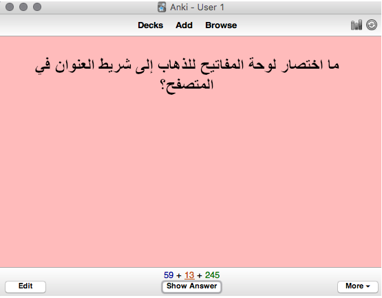
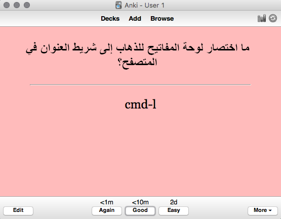
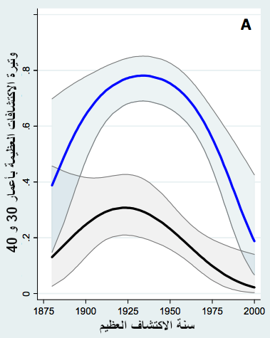
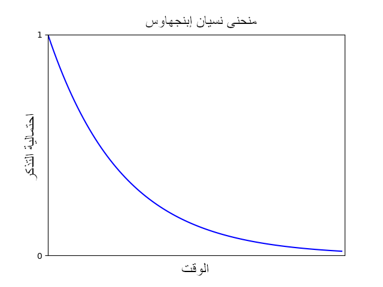
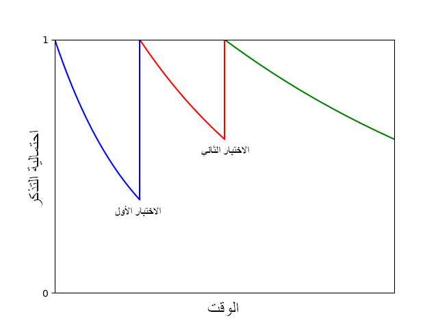

تعزيز الذاكرة طويلة الأمد - مايكل نيلسن (مترجم)
هذه ترجمة لمقالة إنجليزية رائعة لمايكل نيلسن. المقالة الأصلية مرخصة تحت رخصة CC BY-NC 3.0
في يوم من أواسط عشرينيات القرن العشرين، دخل مراسل لصحيفة في موسكو يدعى سليمان شيريشفسكي معملَ عالم النفس ألكسندر لوريا. لاحظ رئيس شيريشفسكي في الجريدة أن الأخير لم يحتج أن يأخذ أي ملحوظات، لكنه تمكن بطريقة ما من تذكر كل ما قيل له، واقترح عليه أن يذهب لمختص لكي يفحص ذاكرته.
بدأ لوريا باختبار ذاكرة شيريشفسكي. بدأ باختبارات بسيطة مكونة من قوائم كلمات وأعداد. تذكرها شيريشفسكي بسهولة، لذلك زاد لوريا من طول القوائم تدريجيا. لكن شيريشفسكي نجح في تذكرها مهما كانت طويلة. ذهب لوريا مذهولا يدرس ذاكرة شيريشفسكي في السنوات الثلاثين التالية. كتب لوريا التالي في كتاب يلخص بحثه1:
تبين أنه لا يوجد حد لسعة ذاكرته ولا متانة المعلومات التي حفظها. بينت التجارب أنه لم يواجه صعوبة في استحضار أي قائمة طويلة من الكلمات أيا كانت. حتى مع أنها عرضت عليه منذ أسبوع، أو شهر، أو سنة، أو حتى سنوات عديدة. في الحقيقة، أجريت بعض التجارب التي صممت لاختبار تذكره (بدون إخباره) بعد خمسة عشر أو ستة عشر عاما من الجلسة التي تذكر فيها الكلمات سابقا. ومع ذلك نجح في تذكرها في كل مرة.
قصص كهذه آسرة. الذاكرة جوهرية لتفكيرنا، وفكرة امتلاك ذاكرة مثالية مغرية. في الوقت نفسه، كثير من الناس مترددون حيال ذواكرهم. لقد سمعت كثيرا أناسا يقولون «ذاكرتي ليست جيدة»، أحيانا بخجل، وأحيانا بأسف، وأحيانا أخرى بتمرد حتى.
بالنظر إلى مركزية الذاكرة لتفكيرنا، من الطبيعي أن نتساءل ما إذا كان يمكن استخدام الحواسيب لتحسين ذاكرتنا. يبدو أن هذا السؤال مولد معطاء للأفكار الجيدة، والسعي وراءه أدى إلى عديد من أهم الوثائق المقدمة لأفكار جديدة في تاريخ الحوسبة. مثال مبكر هو اقتراح فانيفار بوش سنة 1945 في ما يتعلق بموسع ذاكرة ميكانيكي، (الميمكس)2. كتب بوش:
ميمكس هو جهاز يخزن فيه المرء كل كتبه، وسجلاته، ومرسلاته، وهو مُؤتمَت لكي يتم استنطاقه بسرعة عالية ومرونة كبيرة. إنه مكمل مُضخَّم لذواكرنا قريب إلينا.
ألهمت رؤية ميمكس العديد من رواد الحاسوب، بمن فيهم دوغلاس إنجيلبارت وأفكاره عن تعزيز الذكاء البشري، وثيودور نيلسون وأفكاره عن النص الفائق (hypertext)، وبشكل غير مباشر، تيم بيرنرز لي وتصوره للشبكة العنكبوتية العالمية3. في اقتراحه للشبكة، يصف بيرنرز لي حاجة موظفه (منظمة الفيزياء الجزيئية CERN) لتطوير ذاكرة جمعية مؤسساتية:
تطوير حوض معلومات يمكنه النمو والتطور مع المنظمة والمشاريع التي تصفها.
هذه فقط بعض من المحاولات العديدة لاستخدام الحواسيب لتعزيز ذاكرة الإنسان. من الميمكس إلى الويب إلى الويكيات إلى org-mode إلى مشروع Xanadu إلى محاولات لصنع خارطة لكل فكرة يفكر فيها الإنسان: كان تعزيز الذاكرة رؤية مولدة للأفكار للغاية في مجال الحوسبة.
سنبحث في هذه المقالة في موضوع أنظمة الذاكرة الشخصية، وهي الأنظمة المصممة لتحسين الذاكرة طويلة الأمد لفرد واحد. في القسم الأول من المقالة سأروي تجربتي الشخصية مع استخدام نظام كهذا يدعى Anki. كما سنرى، يمكن استخدام أنكي لتذكر أي شيء تقريبا. إنه يجعل الذاكرة خيارا بدلا من أن تكون حدثا عشوائيا يُترَك للصدفة. سأناقش كيف أستخدم أنكي لفهم الأوراق البحثية، والكتب، وأشياء أخرى كثيرة. وسأتحدث عن عديد من طرق الاستخدام الجيدة والسيئة لأنكي. مع أن أنكي برنامج بسيط جدا، من الممكن تطوير مهارة عالية باستخدامه، مهارة تهدف لفهم مواد معقدة بعمق، وليس فقط حفظ حقائق بسيطة.
يناقش القسم الثاني من المقالة أنظمة الذاكرة عموما. يتعامل كثير من الناس مع الذاكرة باعتبارها مهارة ذهنية بتردد واستخفاف أحيانا. مثلا، يتحدث الناس عادة عن الحفظ عن ظهر قلب (rote memory) كما لو أنه أقل مرتبة من أنواع متقدمة من الفهم. سأعارض هذه الفكرة وأدافع عن فكرة أن الذاكرة جوهرية لحل المشاكل والإبداع. كما سنناقش في الجزء الثاني أيضا دور علوم الإدراك في بناء أنظمة الذاكرة الشخصية وبناء أنظمة تعزز المعرفة الإنسانية عموما. في مقالة قادمة، Toward a Young Lady’s Illustrated Primer، سأناقش أفكار أكثر عن أنظمة الذاكرة الشخصية.
إن المقالة غير معتادة الأسلوب؛ إنها ليست ورقة بحثية تقليدية في علوم الإدراك (دراسة في ذاكرة الإنسان وكيفية عملها مثلا)، كما أنها ليست ورقة حول تصميم أنظمة الحاسوب، مع أن تصميم نماذج أولية للأنظمة (prototyping) هو اهتمامي الرئيسي. لكن هذه المقالة مستخلص لملاحظات غير منهجية ومخصصة لأغراض محددة وقواعد عملية سهلة التطبيق حول طريقة عمل أنظمة الذاكرة الشخصية. أردت فهم هذه الأنظمة كتحضير لبناء أنظمتي الخاصة. بينما كنت أجمع هذه الملاحظات بدا لي أنها قد تهم الآخرين أيضا. تستطيع التفكير بهذه المقالة كدليل عملي يهدف لمساعدتك على تطوير مهارات عالية في أنظمة الذاكرة الشخصية. لكن لأن كتابة دليل كهذا ليس هدفي الرئيسي، فقد تأخذ فكرة عن المقالة كدليل يعطيك معلومات كثيرة أكثر مما تريد تعلمه.
بعض الكلمات عن مواضيع لن تغطيها هذه المقالة قبل أن أنهي المقدمة: سأناقش تقنيات التصور المرئي مثل قصور الذاكرة و طريقة (لوكي) بإيجاز فقط. ولن تناقش المقالة استخدام الأدوية لتحسين الذاكرة، ولا واجهات مستقبلية تربط بين الدماغ والحاسوب لتعزيز الذاكرة. تحتاج هذه الموضوعات لنقاش منفصل. لكن كما سنرى لاحقا، هناك بالفعل أفكار قوية حول أنظمة الذاكرة الشخصية مبنية فقط على ترتيب المعلومات وعرضها.
القسم الأول: كيف تتذكر أي شيء تقريبا: نظام Anki
سأبدأ بسرد لتجربتي مع نظام الذاكرة الشخصي أنكي4. المحتوى شخصي لدرجة كبيرة كما قلت سابقا، وهو مجموعة من ملاحظات وقواعد عملية غير رصينة. قد لا تنطبق هذه القواعد على الآخرين؛ في الواقع، قد أكون مخطئا حول مدى قابلية تطبيقها بالنسبة لي. إنها بالتأكيد ليست دراسة مضبوطة بشكل مناسب لاستخدام أنكي! مع ذلك، أؤمن بقيمة جمع مثل هذه الخبرات الشخصية، حتى لو كانت متناقلة وانطباعية. لست خبيرا في مجال علم الذاكرة، وأقدر أي تصحيحات لأي أخطاء موجودة.
للوهلة الأولى، لا يبدو أنكي أكثر من برنامج بطاقات استذكار (flashcards) إلكتروني. تدخل سؤالا:  وجوابا مقابلا: 
سيطلب منك لاحقا مراجعة البطاقة: سيظهر لك السؤال وتُسأل ما إذا كنت تعرف الجواب أم لا.
الشي الذي يجعل أنكي أفضل من بطاقات الاستذكار التقليدية هو أنه يدير جدولة المراجعة. إذا استطعت الإجابة عن سؤال بشكل صحيح، تطول الفترة الزمنية الفاصلة بين المراجعات تدريجيا. فيصبح فاصل يوم واحد بين المراجعات فاصل يومين، ثم 6 أيام، ثم 14 يوما، وهكذا. الفكرة هي أن المعلومة تصبح أكثر رسوخا في ذاكرتك، لذلك فهي تتطلب مراجعة بوتيرة أخف. لكن إذا حصل وفشلت بالإجابة عن سؤال، يعاد ضبط الجدولة، ويصبح عليك أن تبني الفاصل الزمني بين المراجعات من البداية.
مع أنه من المفيد بوضوح أن الحاسوب يهتم بإدارة الفواصل بين المراجعات، قد لا تبدو هذه الفكرة بالشيء الكبير. المغزى هو أن هذه الطريقة أكثر فعالية بكثير لمراجعة المعلومات.
إلى أي مدى هي أكثر فعالية؟
للإجابة عن هذا السؤال، لنجرِ بعض الحسابات التقديرية. تستغرق مني إجابة بطاقة حوالي 8 ثواني وسطيا. لنفرض أنني أستخدم بطاقات الاستذكار التقليدية، وأراجعها مرة في الأسبوع. إذا أردت تذكر معلومة ما للسنوات العشرين القادمة، فسأحتاج 20 سنة مضروبة بـ52 أسبوعا لكل سنة مضروبة بـ8 ثوان لكل بطاقة. ينتج عن هذا مدة مراجعة تجتاز الساعتين لكل بطاقة.
بينما فواصل مراجعة أنكي المتزايدة دوما تتخطى الشهر بسرعة ثم السنة. في الواقع، الفاصل المتوسط بين المراجعات لمجموعة بطاقاتي الشخصية هو 1.2 سنة ويتزايد. في ملحق في الأسفل حيث أقدر ذلك لبطاقة عادية، أجد أنني أحتاج فقط من 4 إلى 7 دقائق مراجعة لمدة 20 سنة كاملة. تسمح هذه التقديرات ببعض المراجعات الفاشلة من حين لآخر، حيث يُصفّر الفاصل الزمني. هذا توفير للوقت بمقدار 20 ضعفا مقارنة بأكثر من ساعتين متطلبات مع بطاقات الاستذكار التقليدية.
بالتالي لدي قاعدتان عمليتان. أولا، إذا كان حفظ معلومة يستحق 10 دقائق من وقتي في المستقبل، فسأفعل5. ثانيا، ومهيمنا على القاعدة الأولى، إذا بدت حقيقة ما لافتة للنظر فستذهب إلى أنكي، بغض النظر عما إذا كانت تستحق 10 دقائق من وقتي المستقبلي أم لا. السبب وراء هذا الاستنثاء هو أن كثيرا من أهم الأشياء التي نعرفها هي أشياء لسنا متأكدين ما إذا كانت ستكون مهمة، لكن حدسنا يقول لنا إنها مهمة. لا يعني هذا أننا يجب أن نحفظ كل شيء، لكن من المفيد تنمية حدس حول ما نحفظ.
أكبر تغيير يجلبه أنكي هو أنه يعني أن الذاكرة لم تعد بعد الآن حدثا عشوائيا يترك للصدفة، بل إنه يضمن أنني سأتذكر كل شيء بأقل جهد ممكن. إن أنكي يجعل الذاكرة خيارا.
في ماذا يمكن استخدام أنكي؟ أستخدم أنكي في كل نواحي حياتي. أستخدمه مهنيا للتعلم من البحوث والكتب، وللتعلم من النقاشات والمؤتمرات، ولمساعدتي على تذكر أشياء مثيرة للاهتمام تعلمتها أثناء محادثة، ولتذكر ملاحظات مهمة خطرت لي أثناء عملي اليومي. شخصيا أستخدمه لتذكر كل أنواع الحقائق المتعلقة بعائلتي وحياتي الاجتماعية؛ حول مدينتي وأسفاري؛ وحول هواياتي. سأصف بعض عادات الاستخدام المفيدة لأنكي وعادات سيئة لتجنبها لاحقا في هذه المقالة.
استخدمت أنكي لإنشاء أكثر بقليل من 10000 بطاقة بعد أكثر من سنتين ونصف من الاستخدام المنتظم. يتضمن هذا انقطاع 7 شهور حين أنشأت القليل جدا من البطاقات الجديدة. أستغرق من 15 إلى 20 دقيقة يوميا لمراجعة بطاقاتي عندما أكون ملتزما بها. إذا ازدادت المدة لأكثر من 20 دقيقة بشكل متكرر فهذا يعني عادة أنني أضيف بطاقات بسرعة شديدة وأحتاج إلى الإبطاء. لكن في بعض الأحيان قد يعني أن علي مراجعات متراكمة من الأيام الماضية (سأناقش هذا لاحقا).
عمليا أستخدم نسخة أنكي للحاسوب لإضافة البطاقات الجديدة، وتطبيق الجوال للمراجعة6. أراجع بطاقاتي ماشيا لجلب قهوة الصباح، ومنتظرا في الطابور، وفي وسائل النقل، وما إلى ذلك. أجد تجربة المراجعة تأملية بشرط أن يكون ذهني صافيا إلى حد جيد. بينما إذا لم يكن ذهني صافيا، أجد المراجعة أكثر صعوبة، وقد يسبب أنكي لي مزيدا من التشتت.
واجهت صعوبة في البدء باستخدام أنكي. عديد من معارفي نصحوني بشدة باستخدامه (أو أنظمة شبيهة)، وعلى مر السنين حاولت استخدامه عدد مرات، واستسلمت في كل مرة بسرعة. عندما أفكر بهذا الآن، أظن أن هناك عوائق عظيمة يجب اجتيازها لكي تجعل من استخدام أنكي عادة.
ما جعل أنكي أخيرا يروق لي ويصبح عادة هو مشروع شرعت بإنجازه كمزحة. كنت محبطا لسنين حيال فشلي في تعلم سطر أوامر Unix بشكل جيد. لقد تعلمت الأوامر الأساسية فقط. إن تعلم سطر الأوامر قوة خارقة لكل من يبرمج، لذلك بدت لي كشيء يُستحسن بشدة تعلمه. لذلك تسآلت للتسلية ما إذا كان من الممكن استخدام أنكي لحفظ كتاب صغير حول سطر أوامر يونكس عن ظهر قلب.
وقد نجح الأمر!
اخترت كتاب “Macintosh Terminal Pocket Guide” من O’Reilly Media للمؤلف Daniel Barrett. لا أعني حرفيا أنني حفظت نص الكتاب كاملا عن ظهر قلب7. لكنني حفظت معظم أفكار الكتاب، بالإضافة إلى الأسماء، وتراكيب الأوامر، وخيارات معظم الأوامر في الكتاب. باستنثاء أشياء لم أتخيل حاجتي لها. لكنني حفظت معظم ما تخيلت حاجتي لاستخدامه. في النهاية لقد غطيت من 60 إلى 70 بالمئة من الكتاب، متجاوزا الأجزاء التي لم تبدُ ذات أهمية لي. مع ذلك، زادت معرفتي لسطر الأوامر لدرجة عظيمة.
اختيار هذا الهدف السخيف، لكن المفيد للغاية، أعطاني ثقة كبيرة باستخدام أنكي. كان هذا مثيرا، وأثبت بوضوح أن أنكي يجعل من السهل علي تعلم أشياء كان تعلمها مملا وصعبا سابقا بدونه. جعلت هذه الثقة أيضا من السهل علي جعل أنكي عادة. في الوقت نفسه، ساعدني المشروع أيضا على تعلم واجهة أنكي، وأتاح لي تجربة طرق مختلفة لطرح الأسئلة. بعبارة أخرى، لقد ساعدني على بناء المهارات اللازمة لاستخدام أنكي بشكل جيد.
استخدام أنكي لقراءة شاملة لورقة بحثية في مجال غير مألوف
أجد أنكي مفيدا جدا عند قراءة أوراق بحثية، خصوصا في مجالات خارج تخصصي. كمثال عن كيفية عمل هذا، سأسرد تجربتي مع قراءة ورقة سنة 20168 التي تصف AlphaGo، نظام الحاسوب من Google DeepMind والذي هزم بعضا من أقوى لاعبي لعبة Go في العالم.
بعد المبارة حيث تغلب ألفا غو على Lee Sedol، واحد من أقوى لاعبي غو في العالم، اقترحت على مجلة Quanta أن أكتب مقالة عن النظام9. كان ألفا غو موضوعا ساخنا في وسائل الإعلام في ذلك الوقت، وكانت الزاوية المشتركة الأكبر في القصص هي الزاوية الإنسانية التي تتصور AlphaGo كجزء من قصة صراع قائم طويل بين الإنسان والآلة، مع بعض التفاصيل التقنية، المضمنة غالبا للتنويع.
أردت أخذ زاوية مختلفة. خلال التسعينيات والعقد الأول من الألفينيات، اعتقدت أن ذكاء اصطناعيا عاما يوازي الذكاء البشري أو يفوقه ما زال بعيدا جدا في المستقبل. سبب هذا هو أنه في ذلك الوقت لم يجرِ الباحثون سوى تقدما بطيئا في بناء أنظمة حدسية للتعرف على الأنماط، من النوع الذي يدعم البصر والسمع البشريين، كما في لعب ألعاب مثل غو. على الرغم من جهود عظيمة من باحثي الذكاء الاصطناعي، عديد من إنجازات إيجاد الأنماط والتي يجدها البشر غاية في السهولة بقية مستحيلة للآلات.
مع أننا صنعنا تقدما بطيئا جدا بخصوص هذه المشاكل لوقت طويل، بدأ التقدم بالتسارع حول سنة 2011، مشحونا بتقدمات في الشبكات العصبية المتعمقة. مثلا، تحولت أنظمة رؤية الآلة من كونها فظيعة إلى أن أصبح من الممكن مقارنتها ببصر البشر في مهام معينة محدودة. بحلول وقت إطلاق ألفا غو، أصبح من الخطأ القول بأننا لا نملك فكرة عن كيفية بناء أنظمة حواسيب للبحث الحدسي عن الأنماط. مع أننا لم نحل المشكلة تماما بعد، فإننا نصنع تقدما سريعا. كان ألفا غو جزءا كبيرا من القصة، وأردت في مقالتي استكشاف فكرة بناء أنظمة حواسيب تحاكي الحدس البشري هذه.
مع أنني كنت متحمسا، كتابة مثل هذه المقالة سيكون صعبا. إنها ستتطلب فهما عميقا للتفاصيل التقنية لألفا غو أكثر من مقالة صحفية معتادة. لحسن الحظ، لدي معرفة جيدة بالشبكات العصبية، وقد كتبت كتابا عنها10. لكنني لا أعرف شيئا عن لعبة غو، أو حول الأفكار العديدة المستخدمة في ألفا غو، والمبنية على مجال يدعى التعليم المعزز. كان علي تعلم هذه المواد من الصفر، وكان علي فهم الأفكار التقنية المضمنة جيدا لكتابة مقالة جيدة.
إليكم كيف فعلتها.
بدأت بورقة ألفا غو نفسها. بدأت بقراءتها قراءة عجولة. لم أكن أهدف إلى الفهم الشامل، بل كنت أفعل شيئين اثنين. أولا، كنت أحاول التعرف على الأفكار الأكثر أهمية في الورقة. ما أسماء التقنيات الأهم التي علي تعلمها؟ ثانيا، كان هناك عملية كنس للبحث عن الحقائق الأساسية التي يمكنني فهمها بسهولة، وهذا سيفيدني طبعا. أشياء مثل المصطلحات الأساسية، وقواعد لعبة غو، وما إلى ذلك.
إليكم بعض الأمثلة عن أنواع الأسئلة التي أضفتها إلى أنكي في هذه المرحلة: «ما حجم طاولة لعبة غو؟»؛ «من يلعب أولا في غو؟»؛ «من كم موضع لعب بشري تعلم ألفا غو؟»؛ «من أين حصل ألفا غو على بيانات تدريبه؟»؛ «ما أسماء النوعين الأساسين للشبكات العصبية التي استخدمها ألفا غو؟»
هذه كلها أسئلة بسيطة كما ترون. إنها من النوع الذي يمكن استخلاصه أثناء المرور الأول على الورقة، مع استطرادات من وقت لآخر للبحث في غوغل وويكيبيديا، وما إلى ذلك. كما أن هذه الحقائق كان يرجح أنها ستكون مفيدة في بناء فهم أعمق للمواد الأخرى في الورقة بالإضافة إلى كونها سهلة الفهم بمعزل.
مررت على الورقة عدة مرات بهذه الكيفية، كاسبا فهما أعمق وأعمق في كل مرة. في هذه المرحلة لم أكن أهدف إلى فهم كامل لألفا غو، بل كنت أحاول بناء فهم لخلفيته. إذا تعسر علي فهم شيء ما، كنت أتخطاه ببساطة بدون قلق دوما. لكن كلما مررت على الورقة، كان يتوسع نطاق الأشياء التي كان سهلا علي فهمها. وجدت نفسي أضيف أسئلة عن أنواع الميزات المستخدمة كمدخلات لشبكات ألفا غو العصبية، وحقائق أساسية حول بنية الشبكات وما إلى ذلك.
بعد خمس أو ست قراءات للورقة، رجعت لأحاول أن أقرأها قراءة شاملة. كان الهدف هذه المرة فهم تفصيلي لألفا غو. أنا الآن أفهم معظم المعلومات السياقية، وكان من السهل نسبيا قراءة الورقة قراءة شاملة، أسهل بكثير من قراءة الورقة دفعة واحدة بدون تحضير طبعا. لا تسئ فهمي: ما زالت قراءة الورقة صعبة، لكنها أسهل بكثير مما لو لم أقرأها قراءات تحضيرية.
بعد قراءة شاملة للورقة، عدت لأقرأها قراءة شاملة ثانية بأسلوب مشابه. لقد استوعبت المزيد. في هذا الوقت، فهمت نظام ألفا غو بشكل جيد. كان كثير من الأسئلة التي أضفتها إلى أنكي عالي المستوى، أحيانا تصل هذه الأسئلة لكونها اتجاهات نحو بحوث أصلية جديدة. لقد فهمت ألفا غو جيدا كفاية لأكون واثقا من قدرتي على كتابة الأقسام التي تتعلق به من مقالتي. (اشتملت مقالتي عمليا على عدة أنظمة، وليس فقط ألفا غو، وكان علي التعلم عن تلك الأنظمة أيضا باستخدام عملية مشابهة، لكنني لم أتعمق بهذا القدر.) استمررت بإضافة أسئلة أثناء كتابتي للمقالة، وانتهيت بإضافة مئات الأسئلة بالمجمل. في هذه المرحلة تم إنجاز العمل الأصعب.
كان بإمكاني بالطبع استخدام الملحوظات التقليدية بدلا من استخدام أنكي، مستخدما عملية مشابهة لبناء فهم للورقة. لكن استخدام أنكي أعطاني ثقة أنني سأحتفظ بمعظم فهمي على المدى الطويل. بعد ما يقارب السنة نشرت DeepMind أوراقا تصف أنظمة تابعة، تعرف بـAlphaGo Zero و AlphaZero11. رغم أنني لم أفكر كثيرا بألفا غو والتعليم المعزز في الفترة الفاصلة، وجدت أنني أستطيع قراءة الورقات التابعة بسهولة. مع أنني لم أحاول فهم هذه الورقات بشكل شامل كما فعلت مع ورقة ألفا غو، وجدت أن بإمكاني تحصيل فهم جيد جدا للورقات في أقل من ساعة. احتفظت بمعظم ما فهمته سابقا!
للمقارنة، لو استخدمت طرق أخذ الملحوظات التقليدية في قراءتي الأصلية لورقة ألفا غو، لكان فهمي ليتبخر بسرعة، وكانت قراءة الأوراق التالية ستأخذ مني وقتا أطول. لذلك فاستخدام أنكي بهذه الطريقة أعطاني ثقة بأنني سأحتفظ بفهمي على المدى الطويل. هذه الثقة بدورها تجعل عملية الفهم الأولية ممتعة أكثر، لأنك تؤمن أنك تتعلم للمدى الطويل، وليس لتنسى بعد يوم أو أسبوع.
أخذت كل هذه العملية أياما معدودة من وقتي ممتدة على أسابيع قليلة. هذه عمل كثير. لكن العائد هو أنني حصلت على أرضية أساسية جيدة في نظرية التعليم المعزز العميق المعاصرة. هذا مجال مهم للغاية، وذو فائدة كبيرة في علم الروبوتات، ويعتقد عديد من الباحثين أنه سيلعب دورا مهما في تحقيق الذكاء العام الاصطناعي. في أيام قلائل انتقلت من معرفة لا شيء عن التعليم المعزز العميق إلى فهم متين لورقة رئيسية في المجال، ورقة استخدمت تقنيات عديدة مستخدمة في الحقل بأكمله. بالطبع ما زال أمامي طريق طويل لكي أصبح خبيرا. هناك تفاصيل هامة عديدة حول ألفا غو لم أفهمها، وكان ليكون علي بذل جهد أكثر بكثير لبناء نظامي الخاص في المجال. لكن هذا الفهم التأسيسي يساعد على بناء خبرة عميقة.
حسنٌ، لكن ماذا يمكن للمرء التحقيق باستخدامها؟ … الآن ولدي كل هذه القوة - روبوت ميكانيكي لا ينسى أبدا ولا يدعني أنسى ما أريد تذكره - ماذا أختار تذكره؟ – غويرن برانوين
من الملحوظ أنني كنت أقرأ ورقة ألفا غو لدعم مشروع إبداعي خاص بي، وهو كتابة مقالة لمجلة Quanta. هذه مهم: أجد أن أنكي يعمل بشكل أفضل بكثير إذا اُستخدم لخدمة مشروع إبداعي شخصي.
من الجاذب فكرة استخدام أنكي لتخزين المعلومات ليوم مستقبلي ما بقول مثل «آه، يجب أن أتعلم عن جغرافية أفريقا، أو أتعلم عن الحرب العالمية الثانية، أو […]». هذه أهداف جذابة فكريا بالنسبة لي، لكن لدي تعلق عاطفي بها. جربت هذا عدة مرات. يميل هذا إلى توليد أسئلة أنكي باردة لا حياة فيها، أسئلة أجد من الصعب التفاعل معها في مراجعة لاحقة، ومن الصعب جدا استيعاب أجوبتها وتثبيتها في الذاكرة. المشكلة ربما في الفكرة الأولية حول أنه «يجب» أن أتعلم عن هذه الأشياء: عقلانيا، تبدو هذه فكرة جيدة، لكن لدي اتصال عاطفي ضئيل بها.
للمقارنة، عندما أقرأ لدعم مشروع إبداعي، فإنني أصنع أسئلة أنكي أفضل بكثير. أجد من السهل التواصل مع الأسئلة والأجوبة عاطفيا. أنا ببساطة أولي لها اهتماما أكبر، وهذا يصنع فرقا. لذلك مع أن من الجذاب استخدام بطاقات أنكي للتحضير لاستخدام مستقبلي (مفترض ربما)، من الأفضل إيجاد طريقة لاستخدام أنكي كجزء من مشروع إبداعي ما.
ادرس بجد ما يهمك أكثر، بالطريقة الممكنة الأكثر فوضوية، واستهتارا، وإبداعا. – ريتشارد فاينمان
استخدام أنكي للقراءة السطحية للأوراق البحثية
معظم قراءاتي المعتمدة على أنكي أكثر سطحية بكثير من قراءتي لورقة ألفا غو. بدلا من قضاء أيام على ورقة، عادة ما أقضي من 10 إلى 60 دقيقة، وأحيانا أكثر للأوراق الجيدة جدا. إليكم بعض الملاحظات حول عادات وجدتها مفيدة للقراءة السطحية.
كما ذكرت سابقا، أقوم بمثل هذه القراءة عادة كجزء للبحث المصاحب لمشروع ما. أجد مقالة جديدة (أو مجموعة مقالات)، وعادة ما أقضي عدة دقائق أقيّمها. هل يرجح أن تحتوي المقالة على فهم عميق أو محفز لمشروعي - أسئلة جديدة، أو أفكار جديدة، أو طرق جديدة، أو نتائج جديدة؟ إذا كان كذلك، فسأقرؤها.
لا يعني هذا قراءة كل كلمة من الورقة. بل أضيف لأنكي أسئلة حول الادعات والأسئلة والأفكار الجوهرية للورقة. أجد من المفيد خصوصا استخلاص الأسئلة من الملخص، والمقدمة، والخاتمة، والأشكال التوضيحية والتعليقات عليها. عادة ما أستخرج من 5 إلى 20 سؤالا من الورقة. من السيء عادةً استخراج أقل من 5 أسئلة لأن هذا يجعل الورقة معزولة يتيمة في ذاكرتي. أجد لاحقا من الصعب أن أشعر بصلة كبيرة بهذه الأسئلة. بعبارة أخرى: إذا كانت ورقة مملة لدرجة أنه من غير الممكن إضافة أكثر من 5 أسئلة جيدة عنها، فمن المفضل ألا أضيف أي أسئلة على الإطلاق.
عادة سيئة بخصوص هذه العملية هي إضافة المعلومات المضللة إلى أنكي. يحتوي عديد من الأوراق على ادعاءات خاطئة أو مضللة، وإذا حفظت مثل هذه المعلومات في ذاكرتك، فإنك تجعل نفسك أكثر غباء.
ما السبيل إلى تجنب إضافة المعلومات المضللة إلى أنكي؟
كمثال، دعني أصف لك كيف أضفت ورقة بحثية قرأتها مؤخرا إلى أنكي، مكتوبة من قبل عالمي الاقتصاد (بينجامين جونز) و (بروس وينبيرغ)12. تدرس الورقة أعمار العلماء حينما صنعوا أعظم اكتشافاتهم.
يجب أن أقول شيئا أولا: ليس لدي سبب لاعتقاد أن هذه الورقة مضللة! لكن من الجيد أن يكون المرء حذرا. كمثال عن هذا الحذر، كان واحد من الأسئلة التي أضفتها إلى أنكي: «ما متوسط العمر الذي يدعي (جونز) سنة 2011 أن علماء الفيزياء الحاصلين على جائزة نوبل صنعوا كشفهم الذي خولهم لنيل الجائزة فيه، بين أعوام 1980-2011؟» (الجواب: 48). نوع سؤال آخر هو: «ما الورقة التي ادعت أن علماء الفيزياء الحائزين على نوبل صنعوا كشفهم الذي خولهم لنيل الجائزة في متوسط عمر 48 سنة، في فترة 1980-2011؟» (الجواب: (جونز) سنة 2011). وهكذا.
أسئلة كهذه تخصص الادعاء المضمن: إننا نعلم أنه ادعاء قيل في ورقة (جونز) سنة 2011، وأننا نعتمد على جودة تحليل بيانات (جونز) و (وينبرغ). في الحقيقة، أنا لم أفحص ذلك التحليل بحذر كافي لأن اعتبر ادعاء أن متوسط عمر هولاء العلماء الحائزين على نوبل هو 48 كحقيقة. لكن المؤكد هو أن الورقة ادعت أن العمر هو 48 سنة. هذه أشياء مختلفة، والسؤال الأخير هو الأفضل لإضافته إلى أنكي.
إذا كنت مهتما خصوصا بجودة التحليل، فقد أضيف سؤالا أو أكثر عما يجعل هذا العمل صعبا، مثل: «ما تحدي من تحديات تحديد عمر الحائزين على نوبل في وقت اكتشافاتهم، كما نوقش في ورقة (جونز) سنة 2011؟» تتضمن الأجوبة الجيدة: صعوبة تحديد الورقة التي احتوت على العمل الحائز على نوبل؛ حقيقة أن نشر الأوراق أحيانا يتأخر بسنين؛ أن العمل أحيانا يكون ممتدا على عدة أوراق؛ وهكذا. التفكير حول هذه التحديات يذكرني أنه إذا كان (جونز) و (وينبرغ) غير دقيقين، أو ببساطة ارتكبوا خطأ متقبلا، فإن أرقامهم قد لا تكون صحيحة. حصل أنني في هذه الورقة المحددة لست مهتما كثيرا بهذه المسائل. لذلك لم أضف سؤالا كهذا إلى أنكي. لكن من الجيد أن يكون المرء حذرا في صياغة الأسئلة لكي لا يضلل نفسه.
عادة مفيدة أخرى أثناء قراءة الأوراق هي إضافة الأشكال التوضيحية إلى أنكي. مثلا، هذا رسم بياني من ورقة (جونز) سنة 2011 يظهر احتمال أن يكون فيزيائي قد صنع اكتشافه الحائز على نوبل بعمر 40 (الخط الأزرق) وبعمر 30 (الخط الأسود):

لدي سؤال أنكي يقول ببساطة: «تصور الرسم البياني الذي صنعه (جونز) سنة 2011 حول منحنيات احتمالية أن الفيزيائين صنعوا اكتشافاتهم الحائزة على نوبل في سن 30 و 40». الجواب هو الصورة الموضحة في الأعلى، وأعد نفسي ناجحا إذا كان تصوري الذهني يدور حول هذه الخطوط. يمكنني تعميق صلتي مع الرسم بإضافة أسئلة مثل: «في الرسم البياني الخاص بـ (جونز) سنة 2011 حول الاكتشافات الفيزيائية الحائزة على نوبل، ما ذروة احتمالية الاكتشاف العظيم في سن 40 [مثلا، النقطة الأعلى في الخط الأزرق في الرسم البياني في الأعلى]؟» (الجواب: حوالي 0.8). في الواقع، يمكن بسهولة إضافة عديد من الأسئلة المثيرة حول هذا الرسم. أنا لم أفعل هذا، بسبب الوقت المتطلب لصنع مثل هذه الأسئلة. لكنني أجد الشكل العام للرسم أخاذا. كما أن من المفيد أن أعرف أن الرسم موجود، وأين يمكنني الوصول إليه إذا أردت تفاصيل أكثر.
قلت سابقا إنني عادة ما أقضي من 10 إلى 60 دقيقة أضيف أسئلة أنكي حول ورقة، مع اعتماد المدة على حكمي للفائدة التي استخلصها من الورقة. على أي حال، إذا كنت أتعلم الكثير، وأجد هذا ممتعا، فإنني أستمر بإضافة الأسئلة والقراءة. المصادر الجدية جدا تستحق بذل الوقت. لكن معظم الأوراق لا تطابق هذا الوصف، ويحصل لديك تشبع بسرعة. إذا شعرت أن باستطاعتك إيجاد شيء له عائد أكبر لقراءته بسهولة، فانتقل إليه. من المفيد ممارسة هذه الانتقالات عمدا، لتجنب بناء عادة الرغبة في الاستكمال السلبية في قراءتك. من الممكن غالبا قراءة ورقة بعمق أكثر، لكن لا يعني هذا أنك لا تستطيع أن تستخرج فائدة أكبر في مكان آخر. من السيء استغراق الكثير من الوقت بقراءة أوراق غير مهمة.
القراءة الموسوعية باستخدام أنكي
تحدثت عن كيفية استخدام أنكي للقراءة السطحية للأوراق، والقراءة العميقة بعض الشيء أيضا. يمكن أيضا من زاوية معينة أن يستخدم أنكي ليس فقط لقراءة الأوراق، بل لـ«قراءة» كامل أدبيات البحث في مجال معين. إليكم كيفية فعل هذا.
قد تفترض أن الأساس يقوم على قراءة سطحية لعدد كبير من الأوراق. في الحقيقة، لفهم مجال غير مألوف فعلا، عليك أن تطور صلة عميقة مع الأوراق الجوهريةـ، أوراق مثل ورقة ألفا غو. إن ما تكسبه من تفاعل عميق مع الأوراق الجوهرية هو أكبر بكثير من أي حقيقة أو تقنية مفردة: ستكسب إداركا حول ما تبدو عليه نتيجة مؤثرة في مجال كهذا. إنها تساعدك على تشرب العادات والمعايير الأكثر صحية للمجال. تساعدك على تعلم كيف تسأل أسئلة جيدة في المجال، وكيف تجمع بين التقنيات. ستبدأ بفهم ما الذي جعل شيئا كألفا غو تقدما عظيما، وحدوده أيضا، وتدرك أنه فعلا تطور طبيعي في حقله. لا تُرصَد هذه الأشياء فرديا بأي سؤال أنكي منفرد. لكنها ترصد جمعيا بالأسئلة التي يسألها المرء عند التفاعل بعمق مع الأوراق الجوهرية.
عادة ما أبدأ بورقة مهمة حقا لآخذ صورة عن حقل كامل، بشكل أمثل ورقة تقرر نتيجة جعلتني مهتما بالحقل في المقام الأول. أقرأ الورقة قراءة كاملة، بشكل مشابه لما فعلته مع ورقة ألفا غو. ثم أقرأ الأوراق المهمة الأخرى قراءة كاملة، أقرا الـ5-10 أوراق الأفضل في الحقل. كما أقرأ أيضا أوراق أقل أهمية (لكنها جيدة) أكثر بكثير قراءة سطحية وتقطع. هذا يعني عشرات الأوراق حسب خبرتي حتى الآن، لكن أتوقع أنه في بعض المجالات سأقرأ أخيرا مئات أو آلاف الأوراق بهذا الأسلوب.
قد تسأل لم لا أركز على الأوراق الأكثر أهمية فقط؟ جزء من هذا غير مثير للاهتمام: وهو أنه من الصعب أن تميز الأوراق الأكثر أهمية. تساعدك القراءة السطحية لعديد من الأوراق على معرفة الأوراق الجوهرية، بدون بذل الكثير من الوقت للقراءة العميقة لأوراق يظهر لاحقا أنها ليست مهمة جدا. لكن هناك أيضا ثقافة يتشربها من يقرأ الأوراق الأساسية في مجال ما: وهي إدراك للتقدم المعتاد، الجانب العملي للمجال. هذا مفيد أيضا، خصوصا لبناء صورة عامة لوضع المجال، ولتحفيز أسئلتي الخاصة. في الحقيقة، مع أنني لا أنصح ببذل قسم كبير من وقتك بقراءة الأوراق السيئة، من الممكن طبعا أن تخرج بفائدة من ورقة سيئة. يوجد التحفيز في أماكن غير متوقعة.
هذا ما يدعوه (مورتيمر أدلر) و (تشارلز فان دورين) القراءة الموسوعية (syntopic reading).13 مع الوقت أبني فهما لأدبيات مجال كامل. ما تم فعله وما لم يتم. بالطبع ليس هذا حرفيا قراءة أدب كامل، لكن عمليا إنها قريبة. أبدأ بتعريف المشاكل المفتوحة، والأسئلة التي أرغب في أن تجاب شخصيا لكن لا يبدو أنها أجيبت بعد. أتعرف على التقنيات والملحوظات الواعدة، لكن التي لا أعلم مآلها بعد. وأحيانا أتعرف على ما يبدو أنه نقط عمياء تشمل المجال كله. أضيف أسئلة عن كل هذا إلى أنكي أيضا. بهذه الطريقة، أنكي هو أداة تدعم بحثي الإبداعي. إن له قصوراته كأداة بهذا الصدد، حيث إنه لم يصمم لدعم العمل الإبداعي، إنه ليس مثلا معدا للاستكشاف الحر داخل مساحة للمسودات. لكن حتى بدون هذا، فإنه مفيد للدعم الإبداعي.
كنت أشرح كيف أستخدم أنكي لتعلم المجالات الجديدة لي بشكل كبير. للمقارنة مع مجال أعلمه جيدا، فضولي وتصوري لهذا المجال عادة بالأصل قويان جدا لدرجة أن من السهل تعلم حقائق جديدة. ما زلت أجد أنكي مفيدا، لكنه بالتأكيد مفيد أكثر في المجالات الجديدة. يقول الرياضياتي الإنجليزي العظيم (جون إيدنسور ليتلوود)14:
جربت تعلم رياضيات خارج مجالات اهتماماتي؛ بعد مدة كان علي البدء من الصفر.
يوضح هذا شيئا من الجهد العاطفي العظيم الذي اعتدت على أن أجده مطلوبا لتعلم مجال جديد. بدون كثير من التحفز، كان من الصعب جدا جعل كثير من المواد في حقل جديد ترسخ في عقلي. يفعل أنكي الكثير لحل هذه المشكلة، من جانب معين إنه طرف صانعي عاطفي يساعد على خلق العزم اللازم لتحقيق الفهم. إنه لا يحل المشكلة بمفرده، كما ذكرت سابقا، فمن المفيد جدا أن يكون لي مساعٍ أخرى (مثل مشروع إبداعي، أو ناس معتمدون علي) للمساعدة على خلق ذلك العزم. مع ذلك، يساعد أنكي بإعطائي الثقة بأن بإمكانني ببساطة تقرير أنني أريد التعمق في مجال جديد، وأحتفظ بمعظم ما أتعلمه وأفهمه. نجح هذا في كل مجالات الفهم التصوري التي جربته فيها15.
نتيجة مفاجئة للقراءة بهذه الطريقة هي كم تصبح ممتعة أكثر معها. لطالما استمتعت بالقراءة، لكن الخوض في مجال جديد صعب كان أحيانا عملا مرهقا، وكثيرا ما انتابتني الشكوك حيال نجاحي على الإطلاق بالبدء في المجال. هذا الشك بدوره جعل نجاحي أقل رجحانا. لدي الآن الثقة بأنني أستطيع الخوض في مجال جديد وأحصل بسرعة على فهم جيد عميق نسبيا، وراسخ. تجعل هذه الثقة القراءة ممتعة أكثر حتى16.
أمثلة أخرى لاستخدام أنكي
بعد أن نظرنا إلى استخدام أنكي لقراءة الأوراق التقنية، لنعد لأمثلة الاستخدام العامة17. هناك الكثير في هذا القسم، فأثناء قراءتك الأولى له قد ترغب في قراءة النص بسرعة والتركيز فقط على العناصر التي تثير اهتمامك.
اجعل أغلب الأسئلة والأجوبة في أنكي ذرية قدر الإمكان: بمعنى أن كل من
السؤال والجواب يعبر عن فكرة واحدة فقط. كمثال، عندما كنت أتعلم سطر أوامر يونكس،
أدخلت السؤال التالي: «كيف تنشئ رابطا مرنا (soft link) من linkname إلى filename؟»،
كان الجواب: «ln -s filename linkname». لسوء الحظ، كنت أخطئ بالإجابة عن هذا السؤال مرة تلو الأخرى.
كان الحل هو إعادة صياغة السؤال بتقسيمه إلى قسمين. القسم الأول: «ما الأمر الأساسي والخيار
المستخدمين لإنشاء رابط يونكس مرن؟» الجواب: «ln -s …». والقسم الثاني: «عند إنشاء
رابط Unix مرن، ما ترتيب مجيء linkname و filename؟» الجواب: «filename linkname».
تقسيم هذا السؤال إلى أجزاء أكثر «ذرية» جعل سؤالا اعتدت على الإخطاء بإجابته إلى سؤالين أجيبهما بنجاح بانتظام18. والأفضل من ذلك أنني عندما أحتاج إلى إنشاء رابط يونكس مرنا عمليا، فإنني أعرف كيف أفعل ذلك.
لست متأكدا من سبب هذا التأثير. أظن أنه جزئيا بسبب التركيز. عندما أرتكب أخطاء في سؤال مركب، فإنني أكون عادة مشوشا حول مكمن خطئي بالضبط. يعني هذا أنني لم أكن أركز جيدا على الخطأ، لذلك لم أتعلم كثيرا من فشلي. عندما أخطئ في الأسئلة الذرية فإن عقلي يعلم بالضبط أين عليه التركيز.
عموما أجد أن تقسيم أسئلة أنكي إلى أسئلة أكثر ذرية يعود بنفع كبير. إنها طريقة فعالة لإعادة صياغة الأسئلة.
لاحظ أن هذا لا يعني أنه لا يجب عليك الاحتفاظ ببعض من السؤال الأصلي. ما زلت أريد أن أعرف كيف أنشئ رابط يونكس مرنا، لذلك فمن الجيد إبقاء السؤال الأصلي في أنكي. لكنه يصبح سؤالا تكميليا، جزء من هرمية أسئلة تبدأ من الحقائق البسيطة الذرية إلى أفكار أكثر تعقيدا.
بالمناسبة، كون السؤال ذريا لا يعني أنه لا يمكن أن يحتوي على أفكار مقعدة ومفاهيم عالية المستوى. خذ السؤال التالي من حقل النسبية العامة: «ما حد dr^2 في مقياس روبرتسون-ووكر؟» الجواب dr^2 / (1 - kr^2). من المرجح أن يبدو هذا السؤال غامضا إلا إذا كنت قد درست النسبية العامة. إنه سؤال تكميلي معقد، يفترض أنك تعرف ما مقياس روبرتسون-ووكر، وما معنى dr^2، وما معنى k، وما إلى ذلك. لكن بناء على المعرفة الضرورية المسبقة، فإن السؤال والجواب ذرييان لدرجة جيدة.
فائدة لاستخدام أنكي بهذه الطريقة هي أنك تبدأ بتحليل الأشياء إلى أسئلة ذرية. هذا يبلور بجلاء الأشياء التي تعلمتها. شخصيا أجد هذه البلورة مريحة، لأسباب أجدها (ويا للعجب) صعبة الشرح، لكن فائدة حقيقة واحدة هي أنني عادة ما أجد لاحقا أنه يمكن ربط هذه الأفكار الذرية بطرق لم أترقبها في البداية. وهذا يستحق الجهد بجدارة.
يفضل التفكير باستخدام أنكي كمهارة يجب صقلها: أنكي برنامج بسيط للغاية: إنه يوفر لك إدخال النصوص والوسائط الأخرى، ثم يظهر لك هذه الوسائط بجدول زمني محدد بأجوبتك. على الرغم من هذه البساطة، إنه أداة قوية للغاية. وككثير من الأدوات، فإنه يتطلب مهارة لاستخدامه جيدا. من المفيد التفكير بأنكي كمهارة يمكن تطويرها لمستوى الإتقان، ومحاولة صقل هذه المهارة للوصول إلى هذا الإتقان.
ليس أنكي مجرد أداة لحفظ الحقائق البسيطة. إنه أداة لفهم أي شيء تقريبا. هناك مفهوم خاطئ شائع وهو أن أنكي هو فقط لحفظ الحقائق البسيطة الخام، مثل المفردات والتعريفات الأساسية. لكن كما رأينا، من الممكن استخدام أنكي لأنواع فهم أكثر تقدما بكثير. بدأت أسئلتي حول ألفا غو بأسئلة بسيطة مثل «كم حجم طاولة غو؟»، وانتهت بأسئلة مفاهيمية عالية المستوى حول تصميم أنظمة ألفا غو، حول مواضيع مثل كيف تجنب ألفا غو التعميم الزائد من بيانات التمرين، وحدود الشبكات العصبونية الالتفافية، وما إلى ذلك.
جزء من تطوير مهارة استخدام أنكي هو صقل القدرة على استخدامه لأنواع فهم تتعدى الحقائق الأساسية. في الواقع، عديد من الملحوظات التي رصدتها (والتي سأرصدها في الأسفل) حول كيفية استخدام أنكي هي تتعلق فعلا بمعنى فهم شيء. جزئ الأشياء إلى حقائق ذرية. ابنِ هرميات غنية من الترابطات والأسئلة التكميلية. لا تضع أسئلة يتيمة. عادات تساعد على التعمق في المادة المقروءة. أساليب جيدة (وأخرى سيئة) لطرح الأسئلة. أمثلة عن أنواع الأشياء التي تريد حفظها. مهارات أنكي تمثل بشكل ملموس نظريتك لكيفية فهمك؛ سيساعدك تنمية هذه المهارات على الفهم بشكل أفضل. إن قول إن كونك خبيرا في أنكي يعني أنك خبير في الفهم هو ادعاء قوي، لكن فيه بعض الحقيقة.
استخدم رزمة واحدة كبيرة: يسمح لك أنكي بتنظيم بطاقاتك في رزمة ورزم فرعية. يستخدم بعض الناس هذا لإنشاء بنية تنظيمية معقدة. اعتدت سابقا على فعل هذا، لكنني تدريجيا19 دمجت الرزم وفروعها إلى رزمة كبيرة واحدة. ليس العالم مقسما إلى أعضاء مفصولة بشكل محدد، وأنا أؤمن أن من الجيد أن نجعل أنواع مختلفة من الأسئلة تتصادم. في لحظة يسألني أنكي سؤالا حول درجة الحرارة التي يجب أن تُطهَى دجاجة فيها. ثم سؤال حول واجهة برمجة جافاسكربت. هل يجلب لي هذا المزج أي فائدة؟ لست متأكدا. لم أجد، حتى الآن، أي سبب لاستخدام جافاسكربت للتحكم بطبخ دجاجة. لكنني لا أعتقد أن هذا المزج ضار، وآمل أنه محفز إبداعيا، ويساعدني على تطبيق معرفتي في سياقات غير اعتيادية.
تجنب الأسئلة اليتيمة: لنفرض أنني كنت أتصفح الإنترنت وتعثرت على مقالة رائعة حول عادات النظافة الخاصة بالسموريات الألبانية العملاقة، موضوع لم أكن أعرف أنني مهتم به، لكن تبين أنه موضوع أخاذ. بعد مدة وجيزة أضفت من 5 إلى 10 أسئلة إلى أنكي. هذا عظيم، لكن خبرتي تقول لي إنني بعد أشهر قليلة سأجد هذه الأسئلة مملة، وأخطئ فيها بشكل متكرر. أعتقد أن السبب هو أن هذه الأسئلة منفصلة كثيرا عن اهتماماتي الأخرى، وسأكون عندها قد خسرت السياق التي جعلني مهتما بها في المقام الأول.
أسمي هذه أسئلة يتيمة، لأنها ليست متصلة عن قرب بأي شيء آخر في ذاكرتي. ليس سيئا أن يكون لدي بعض الأسئلة اليتيمة في أنكي - قد يكون من الصعب أن أعرف ماذا سيكون اهتمامي به زائلا، وماذا سينمو ليصبح اهتماما كبيرا متصلا مع اهتماماتي الأخرى. لكن إذا كانت أقلية كبيرة من أسئلتي يتيمة، فهذا مؤشر إلى أنني يجب أن أركز أكثر على إضافة أسئلة متعلقة بمشاريعي الإبداعية الرئيسية، وأقلل من إضافة أسئلة حول المواد الجانبية.
من الجيد خصوصا تجنب الأسئلة اليتيمة الوحيدة: أسئلة منفردة منفصلة بشكل كبير عن أي شيء آخر. لنفرض على سبيل المثال أنني أقرأ مقالة في مجال جديد، وتعلمت فكرة بدت مفيدة خصوصا. عندي قاعدة تنص على عدم إضافة سؤال واحد فقط، بل يجب أن أحاول إضافة سؤالين على الأقل، ومن المفضل ثلاث أسئلة أو أكثر. هذا كافٍ عادةً ليكون على الأقل نواة معرفة مفيدة. إذا كان سؤالا يتيما وحيدا، فسأخطئ في إجابته بشكل حتمي دائما، ويكون من مضيعة الوقت أنني أضفته أصلا.
لا تشارك رزمك: سئُلِت كثيرا ما إذا كنت أرغب في مشاركة رزمي. لست أرغب. لقد أدركت مبكرا جدا أن من المفيد جدا وضع معلومات شخصية في أنكي. لا أعني أي شيء شخصي للغاية - فأنا لن أضع أبدا أسرار سوداء عميقة في أنكي، كما لن أضع أي شيء يحتاج للحماية مثل كلمات المرور. لكنني أضع بعض الأشياء التي لا أبوح بها بإهمال.
كمثال، لدي قائمة (قصيرة جد!) من الزملاء الساحرين سطحيا والمثيرين للإعجاب والذين لن أعمل معهم أبدا، لأنني رأيتهم كثيرا يعاملون الناس بشكل سيء. من الجيد إضافة بعض التفاصيل حول تلك المعاملة، لكي أستطيع أن أتذكر بوضوح لم يجب تجنب ذلك الشخص. ليس هذا من نوع المعلومات التي من الصحيح نشره بإهمال: قد أكون أسأت فهم أفعال الشخص، أو السياق الذي تصرف فيه. لكنها معلومة مفيدة شخصيا لإضافتها إلى أنكي.
أنشئ رزمك الخاصة: في موقع أنكي كثير من الرزم المشاركة، لكنني لم أجدها مفيدة كثيرا. السبب الأكبر هو أن صناعة بطاقات أنكي هو فعل فهم بحد نفسه. بمعنى أن معرفة الأسئلة الجيدة التي يجب أن تسألها والأجوبة الجيدة، هو جزء مما يعنيه فهم موضوع جديد بشكل جيد. إن استخدام رزم شخص آخر هو تخلي عن معظم هذا الفهم.
في الواقع، أعتقد أن عملية صنع البطاقات تساعد فعلا على التذكر. وجد باحثو الذاكرة مرارا أنه كلما كان تشفيرك لذاكرة مفصلا أكثر، كانت الذاكرة قوية. أقصد بالتشفير المفصل غناء الترابطات التي تشكلها.
مثلا، من الممكن أن تحاول تذكر الحقيقة المنعزلة التي تقول إن سنة 1962 كانت سنة وضع قمر الاتصالات الصناعي الأول (تيلستار) في مداره. لكن طريقة أفضل لتذكر هذه الحقيقة هي ربطها مع الحقائق الأخرى. على نحو متبذل لحد ما، قد تلاحظ أن تيلستار تم إطلاقه 5 سنين بعد قمر السوفييت الأول، (سبوتنك). لم تأخذ مسألة استخدام الفضاء للاتصالات وقتا طويلا. بشكل أقل ابتذالا، أي بتفصيل غني، أجد شخصيا من المثير للعجب حقيقة أن تيلستار وضع في مداره سنة قبل ظهور ASCII، والذي يمكن القول إنه المعييار الرقمي المعاصر الأول للتواصل النصي. كان للبشرية قمر صناعي قبل أن يكون لها معيار رقمي للتواصل النصي! إيجاد مثل هذا الترابط هو مثال عن التشفير التفصيلي.
عملية صناعة بطاقة أنكي نفسها تكاد تكون دوما شكلا من أشكال التشفير التفصيلي. إنها تجبرك على التفكير بأشكال بديلة للسؤال، لاعتبار الأسئلة الأفضل، وما إلى ذلك. أعتقد أن هذا ينطبق حتى على أبسط البطاقات. وينطبق بشكل مؤكد عندما تصنع بطاقات أكثر تعقيدا، بطاقات تربط الحقيقة الأساسية المراد تذكرها مع الأفكار الأخرى (مثل رابط Telstar-ASCII)، وتبني شبكة أفكار مترابطة غنية.
مع ذلك، هناك بعض الممارسات المفيدة لمشاركة الرزم. مثلا، هناك مجتمعات من طلاب الطب يجدون من المفيد مشاركة الرزم وأحيانا بناؤها معا20. كما أنني وجدت الرزم المشاركة التي تتضمن أسئلة أساسية جدا مفيدة، مثل رزم الفن التي تسأل أسئلة مثل من رسم لوحة معينة. لكن لمستويات الفهم الأعمق، فإنني لم أجد بعد طرقا جيدة لاستخدام الرزم المشتركة.
نمِّ استراتيجيات للتشفير التفصيلي / تشكيل الترابطات الغنية: هذه في الحقيقة استراتيجية فوقية، استراتيجية لتشكيل الاستراتيجيات. مثال عن استراتيجية بسيطة هو أن تستخدم نسخا متعددة من السؤال «نفسه». مثلا، ذكرت سابقا سؤالي الاثنين: «ما السن الذي يدعي (جونز) سنة 2011 أن الفيزيائيين الحائزين على نوبل صنعوا كشفهم الذي استحق الجائزة فيه، في فترة 1980-2011؟» و: «ما الورقة التي ادعت أن الفيزيائيين الحائزين على نوبل صنعوا كشفهم المستحق للجائزة في متوسط عمر 48، في فترة 1980-2011؟» منطقيا، من الواضح أن هذين السؤالين متصلان بشدة. لكن من ناحية كيفية عمل الذاكرة، فإنهما مختلفان، ويسببان ترابطات من محفزات مختلفة.
ماذا عن قصور الذاكرة وتقنيات مشابهة؟ هناك مجموعة معروفة من تقنيات الذاكرة المبنية على أفكار مثل قصور الذاكرة، طريقة لوكي، وأخرى21. هذا شكل متطرف من التشفير التفصيلي، حيث تصنع ترابطات مكانية ومرئية غنية مع المادة التي تريد تعلمها. ها هو (جوشوا فوير) ينقل محادثة حيث يصف خبير تقنيات التذكر (أيد كود) تقنية أساسية من هذه التقنيات:
ثم شرح لي (أيد) طريقته لجعل اسم سهل التذكر، والتي استخدمها في منافسة لحفظ الأسماء والكنيات المرتبطة بـ99 صورة وجه مختلفة في حدث حفظ أسماء ووجوه. إنها تقنية وعدني بأنني أستطيع استخدامها لتذكر أسماء الناس في الحفلات والاجتماعات. «التقنية في الحقيقة بسيطة بشكل مضلل» قال (أيد). «إنها تتمحور حول ربط صوت اسم شخص مع شيء يمكنك تخيله بوضوح. إنها تتمحور بالكامل حول إنشاء صورة حية في ذهنك تربط ذاكرتك الذهنية لوجه الشخص مع ذاكرة ذهنية مرتبطة باسم الشخص. عندما تحتاج إلى العودة وتذكر اسم الشخص في وقت لاحق، ستأتي إلى ذهنك فورا الصورة التي صنعتها… لذا، همم، قلت إن اسمك Josh Foer، صحيح؟» رفع حاجبه ومسح ذقنه بشكل مسرحي. «حسنٌ، أتصور أنك تمازحني (joshing) عندما التقينا لأول مرة، خارج قاعة المنافسة، وأتصور نفسي أنقسم إلى أربع (four) قطع كردة فعل. Four/Foer. هل فهمت؟ هذه الصورة التافهة مسلية -لي على الأقل- أكثر من اسمك المجرد، ويجب أن ترسخ جيدا في الذهن.»
جربت هذه التقنيات، ومع أنها ممتعة، إلا أنها تبدو أكثر فائدة لحفظ المعلومات التافهة - سلسة أوراق شدة، سلسة أرقام، وما إلى ذلك. يبدو أنها أقل تطورا في مجال المفاهيم الأكثر تجريدا، وتجريدات كهذه هي مكمن الفهم الأعمق عادة. من هذا الجانب، فإنها قد تبعد عن الفهم حتى. مع ذلك، من الممكن أنني فقط أحتاج إلى إيجاد طرق أفضل لاستخدام هذه الأفكار، كما احتجت لوقت لكي أفهم أنكي. من المفيد خصوصا أن أبحث في بعض التقنيات المستخدمة من قبل بعض المتمرسين لتشكيل ترابطات غنية. كما يقول (فوير)، مقتبسا خبير ذاكرة، هناك فائدة كبيرة في تعلم «التفكير بطرق يسهل تذكرها أكثر».
تأتي 95% من فائدة أنكي من الـ5% من الميزات: في أنكي طرق لتوليد البطاقات تلقائيا، ووسمها، ونظام إضافات، والكثير. عمليا نادرا ما أستخدم أيا من هذه الميزات. بطاقاتي دائما نوع من اثنين: أغلبها بشكل سؤال وجواب بسيطين؛ أقلية كبيرة هي بشكل ما يدعى بـ cloze: نوع من اختبارات ملء الفراغات. مثلا، أستخدم نوع الكلوز لاختبار نفسي حول اقتباساتي المفضلة:
“إذا كان الحاسوب الشخصي حقا __ فإن استخدامه سيغير __ __“، __، __” (الجواب: وسطا جديدا، أنماط تفكير، حضارة كاملة، آلان كاي، 1989).
يمكن استخدام الـcloze أيضا لطرح الأسئلة التي لا تتضمن اقتباسات:
خدعة أديلسون تعرف أيضا بخدعة __. (الجواب: رقعة الشطرنج)
لم لا أستخدم مزيدا من ميزات أنكي؟ جزء من السبب هو أنني أحصل على فائدة عظيمة من الميزات الأساسية فقط. كما أن تعلم استخدام مجموعة الميزات الصغيرة هذه جيدا تطلب وقتا كثيرا. إن كرة السلة والسلة أدوات بسيطة، لكن يمكنك قضاء عمر كامل تتعلم استخدامها جيدا. بشكل مشابه، يمكن تطوير استخدام أنكي الأساسي بشكل كبير. لذلك فإنني ركزت على تعلم استخدام الميزات الأساسية جيدا.
أعرف كثيرا من الناس الذي يجربون أنكي، ثم يضيعون في متاهة تعلم أكبر قدر ممكن من الميزات لكي يستخدموه «بفعالية». إنهم يركضون وراء تحسينات بنسبة 1% عادة. غالبا ما يترك هؤلاء الناس أنكي «لأنه صعب جدا»، وهي كلمة مرادفة لـ «شعرت بالقلق حيال أنني لا أستخدمه بشكل مثالي». هذا مؤسف. كما ناقشت سابقا، يوفر أنكي ما يقارب 20 ضعف تحسينات مقارنة (لنقل) ببطاقات الاستذكار العادية. لذلك فإنهم يتركون تحسنا بنسبة 2000% لأنهم قلقون أنهم يفوتون الـ5%، أو 1%، أو (في أحيان كثيرة) 0.1% تحسينات. يبدو الوقوع في مثل هذا الفخ جذابا خصوصا للمبرمجين.
لهذا السبب، لا أنصح باستخدام أي ميزات متقدمة عندما يبدأ المرء باستخدام أنكي، ولا تنصيب أي إضافات. باختصار، لا تصيبنك حالة سيئة من مرض فعالية المبرمج. تعلم استخدام أنكي للأسئلة والأجوبة الأساسية، وركز على استكشاف أنماط جديدة داخل هذا النموذج. سيفيدك هذا أكثر بكثير من أي عدد ساعات تقضيها تلعب بالميزات. بعدها، إذا بنيت عادة منتظمة من الاستخدام الجيد لأنكي، يمكنك تجربة الميزات المتقدمة.
تحدي استخدام أنكي لتخزين حقائق الأصدقاء والعائلة: جربت استخدام أنكي لتخزين أسئلة حول أصدقائي وعائلتي (أسئلة غير حساسة!). إنه يعمل جيدا في أمور مثل «هل [صديقي] نباتي؟» لكن استخدامي وُجِه من قبل أسئلة شائكة أكثر. مثلا، لنفرض أنني أتحدث مع صديق حول أولاده، لكنني لم أقابلهم أبدا. يمكنني أن أضيف أسئلة مثل «ما اسم ابن [صديقي] الأكبر؟» أو، إذا تحدثنا عن الموسيقا، قد أضيف سؤالا مثل: «ما اسم موسيقي يحبه [صديقي]؟»
النية وراء مثل هذه التجربة حسنة. لكن طرح مثل هذه الأسئلة عادة ما يشعرني بعدم الارتياح. إنها تبدو كثيرا كافتعال الاهتمام بأصدقائي. هناك عرف اجتماعي قوي ينص على أنك إذا تذكرت ذوق صديقك في الموسيقا أو أسماء أولاده، فهذا لأنك مهتم بذلك الصديق. يبدو استخدام أداة تساعد على التذكر هنا مصطنعا بعض الشيء، لي على الأقل.
تحدثت مع أصدقاء عدة عن هذا الأمر. معظمهم قال الشيء نفسه: إنهم يقدرون أنني أتعب نفسي في المقام الأول، ويجدون من اللطيف أنني أقلق كثيرا حيال كون هذا مصطنعا. لذلك ربما من الخطأ القلق. مع ذلك، ما زالت لدي مشكلة مع هذا الأمر. كيفت أنكي لأشياء أقل شخصية، أشياء مثل تفضيلات طعام الناس. وربما مع الوقت سأستخدمه لتخزين حقائق شخصية أكثر، لكنني آخذ الأمر برويّة الآن.
الذاكرة الإجرائية والذاكرة التقريرة: هناك فرق كبير بين تذكر حقيقة وإتقان عملية. مثلا، مع أنك قد تتذكر أمر يونكس عندما يطلب منك في سؤال أنكي، لا يعني هذا أنك ستلاحظ فرصة لاستخدام الأمر في سياق سطر الأوامر وتكتبه براحة. وشيء آخر أن تجد طرقا جديدة إبداعية لجمع الأوامر التي تعرفها من أجل حل مشاكل صعبة.
بعبارة أخرى: لاستيعاب عملية ما حقا، ليس من الكافي مراجعة بطاقات أنكي. تحتاج إلى إجراء العملية في سياقها. وتحتاج إلى حل مشاكل حقيقة باستخدامها.
مع ذلك، فإنني وجدت عملية النقل سهلة جدا. في حالة سطر الأوامر، فأنا أستخدمه بوتيرة كافية لأن تكون لدي فرص كثيرة لتطبيق معرفتي عن سطر الأوامر المخزنة في أنكي. مع الوقت، تصبح المعرفة التقريرية هذه معرفة إجرائية أستخدمها بانتظام في سياقها. مع ذلك، من الجيد فهم أكثر متى يحصل النقل ومتى لا يحصل. والأفضل من هذا هو نظام ذاكرة يتم دمجه مع بيئة عملي الحقيقة. مثلا، قد يختبرني في أوامر يونكس في بيئة سطر أوامر حقيقية. أو ربما يطلب مني أن أحل مشاكل عالية المستوى في سطر الأوامر.
أجريت تجربة واحد بهذا الخصوص: محاكاة إدخال الأوامر عندما أراجع بطاقات أنكي. لكن انطباعي الشخصي هو أن هذا لا يعمل جيدا وغير مريح، لذلك فقد توقفت عن فعله:
التخلي عن «الأسماء لا تهم»: لقد درست الفيزياء النظرية. هناك قصة شهيرة في الفيزياء، مروية من قبل ريتشارد فاينمان، تقلل من قيمة معرفة أسماء الأشياء. كان فاينمان في طفولته يلعب في حقل مع طفل متذاكي. إليكم ما حدث برواية فاينمان22:
قال طفل لي: «هل ترى ذاك الطائر؟ من أي نوع هو؟»
قلت: «ليس لدي أدنى فكرة عن نوعه.»
قال الطفل: «إنه طائر السمنة بنّي الحنجرة. لم يعلمك أبوك شيئا!»
لكن كان العكس. إنه [والد فينمان] بالفعل قد علمه: قال: «هل ترى ذاك الطائر؟» «إنه هازج سبنسر.» (علمت أنه لم يكن يعرف الاسم الحقيقي.) «حسنٌ، إنه Chutto Lapittida في الإيطالية. Bom da Peida في البرتغالية… تستطيع معرفة اسم ذاك الطائر في كل لغات العالم، لكن في نهاية المطاف، ستكون تعرف لا شيء إطلاقا عن الطائر! ستعرف فقط عن أناس من أماكن مختلفة، وماذا يطلقون على الطائر. لذلك لنلقِ نظرة على الطائر ونرَ ما يفعله، هذا ما يهم.» (تعلمت من سنة صغيرة الفرق بين معرفة اسم شيء ومعرفة الشيء.)
فاينمان (أو والده) يفتح نقاشا يدعو للتفكير حول المعرفة الحقيقية: رصد السلوك، وفهم أسبابه، وما إلى ذلك.
إنها قصة جيدة. لكن مبالغ فيها: الأسماء تهم. ربما ليست مهمة بقدر ما يعتقد الطفل المتذاكي، وهي عادة ليست نوعا عميقا من المعرفة. لكنها أساس يسمح لك ببناء شبكة معرفة.
تم تلقيني فكرة أن الأسماء لا تهم هذه أثناء دراستي العلمية. عندما بدأت باستخدام أنكي، في البداية شعرت بسخافة إضافة أسئلة حول أسماء الأشياء، لكنني الآن أفعل هذا بحماس بعد معرفتي أنها خطوة أولى نحو الفهم.
أنكي مفيد لأسماء كل أنواع الأشياء، لكنني أجده مفيدا بشكل خاص للأشياء غير اللفظية. أنا أضيف مثلا أسئلة حول الأعمال الفنية، مثل: «كيف تبدو لوحة Howl للفنانة Emily Hare؟». الجواب:
أضفت ذاك السؤال لسببين. السبب الرئيسي هو أنني أحب أن أتذكر تجربة الرسم من وقت لآخر. والسبب الآخر هو ربط اسم باللوحة23. إذا أردت التفكير بشكل تحليلي أكثر باللوحة - لنقل، حول الاستخدام الذكي للألوان - فقد أضيف أسئلة مفصلة أكثر. لكنني راضٍ عن ترسيخ تجربة الصورة فقط في ذاكرتي.
ماذا تفعل عندما تتراكم عليك المراجعات؟ يصبح أنكي عسيرا عندما تتأخر بمراجعة البطاقات. إذا توقفت يوم أو اثنين - أو خمسين - تبدأ البطاقات بالتراكم. من المخيف العودة لتجد أن لديك 500 بطاقة لتراجعها في يوم واحد. والأسوأ حتى هو أنه إذا تركت عادة أنكي، فقد تتراكم عليك كمية ضخمة. توقفت بشكل شبه تام عن استخدام أنكي لمدة 7 شهور، وعدت لأجد آلاف البطاقات المتراكمة.
لحسن الحظ، لم يكن من الصعب جدا التدارك. لقد حددت لنفسي أقساطا متصاعدة تدريجيا (100، 150، 200، 250، وأخيرا 300) من البطاقات كل يوم، وأنهيت هذه الأقساط كل يوم لأسابيع عدة حتى استطعت التدارك.
مع أن هذا لم يكن صعبا جدا، إلا أنه كان مثبطا بعض الشيء. كان من الجيد لو كان في أنكي ميزة «تدارك» حيث يوزع البطاقات الزائدة على فترة أسابيع قادمة قليلة في جدولك، لكن هذا غير موجود في أنكي. على كل حال، هذه عقبة، لكنها تخطيها ليس صعبا جدا.
استخدام أنكي لواجهات البرمجة، والفيديوهات، والندوات، والمحادثات، والويب، والأحداث، والأماكن: تقريبا كل شيء قلته سابقا عن معالجة الأوراق البحثية من خلال أنكي ينطبق أيضا على الموارد الأخرى. إليكم بعض الإرشادات. فصلت مناشقة واجهات البرمجة إلى ملحق منفصل تستطيع قراءته في الأسفل إذا كنت مهتما.
للندوات والمحادثات مع الزملاء أجد من المفيد على غير المتوقع تحديد أقساط أنكي. على سبيل المثال، للندوات أحاول أن أجد على الأقل ثلاث أسئلة عالية الجودة لإضافتها إلى أنكي، للمحادثات المطولة، سؤال واحد على الأقل. وجدت أن تحديد الأقساط يساعدني على التركيز أكثر، خصوصا خلال الندوات. (أجد نظريا التركيز في المحادثات الفردية أسهل بكثير.)
أنا عشوائي أكثر حيال الفيديوهات، والأحداث، والأماكن. من الجيد، لنقل، أن أضيف 3-5 أسئلة أنكي بشكل منهجي بعد الخروج في رحلة ما أو الذهاب إلى مطعم جديد، لمساعدتي على تذكر التجربة. أفعل هذا أحيانا. لكنني لست منهجيا لدرجة كبيرة.
أميل إلى إضافة بطاقات أنكي أثناء قراءتي للأوراق والكتب. للندوات والمحادثات وما إلى ذلك، أفضل غمس نفسي في التجربة. بدلا من استحضار أنكي، أنشئ ملاحظة ذهنية (أو ورقية) عما أريد إضافته إلى أنكي بسرعة. ثم أدخلها إلى أنكي لاحقا. يتطلب هذا بعض الانضباط؛ إنه سبب من الأسباب التي تجعلني أفضل تحديد قسط صغير، حيث يتوجب علي فقط إدخال بعض الأسئلة لاحقا بدلا من الكثير.
تنبيه حيال الكتب: قراءة كتاب كامل هو التزام كبير، وإضافة بطاقات أنكي بانتظام قد يبطئك كثيرا. من الجيد أخذ هذا بعين الاعتبار عند تقرير حجم ما تريد إضافته إلى أنكي. أحيانا يكون كتاب مليئا جدا بالمعلومات الرائعة ويستحق الوقت المصروف لإضافة كثير من الأسئلة عنه. لكن إضافة كل شيء تراه إلى أنكي بدون تفكير هو عادة سيئة وقعت بها أحيانا.
ليس ما تضيفه إلى أنكي قرارا تافها: أضف الأشياء التي تخدم أهدافك بعيدة المدى. نحن نصبح ما نتذكره من زاوية معينة، لذلك يجب أن نكون حريصين حول ما نتذكره24. هذا صحيح دوما، لكن أنكي يجعله خصوصا صحيحا.
مع كل ذلك، عادة استخدام ممتعة هي العودة إلى ملاحظاتي القديمة قبل أنكي حول الكتب وإضافتها إلى أنكي. غالبا ما يمكن إنجاز هذا بسرعة، ويعود علي بنفع كبير مقابل الوقت الذي بذلته في الكتب التي نسيتها تقريبا الآن.
مسألة لم أحلها بعد هي كيف يمكنني جمع أنكي مع عملية أخذ الملاحظات لمشاريعي الإبداعية. لا يمكنني استبدال أخذ الملاحظات بأنكي، إنها بطيئة جدا، ولكثير من الأشياء استخدام سيء لذاكرتي طويلة الأمد. في الجانب الآخر، هناك فوائد كثيرة لاستخدام أنكي للأشياء المهمة - وصول مرن للذاكرة هو في جوهر كثير من الفكر الإبداعي. علميا أجد نفسي غريزيا ولا منهجيا أدون بعض الأشياء كملاحظات، وأخرى كأسئلة أنكي، وأشياء أخرى أيضا كالاثنين. عموما يعمل هذا جيدا، لكن لدي إحساس أنها قد تكون أفضل بكثير إذا طبقت فكرا منهجيا أكثر وتجريبا. جزء من المشكلة هو أنني لا أملك نظاما جيدا جدا لأخذ الملاحظات، نقطة انتهى! إذا عملت على ذلك أكثر، أظن أن الإجراء كله سيصبح أفضل بكثير. مع ذلك فإنه يعمل بشكل مرضٍ.
أعتقد أن سرعة الفكر الترابطي مهمة في العمل الإبداعي. – جون ليتلوود
تجنب نمط نعم/لا: عادة سيئة أقع فيها أحيانا هي إضافة كثير من أسئلة نعم/لا. مثلا، إليكم سؤالا ليس جيدا جدا أضفته عند التعلم حول النماذج الرسومية في مجال تعلم الآلة:
هل حساب دالة التقسيم عملي لمعظم النماذج الرسومية؟
الجواب هو “نعم”. هذا جيد لهذا النوع من الأسئلة. لكن تفصيل أفكار السؤال يساعد فهمي. هل يمكنني إضافة سؤال حول أي من النماذج الرسومية حساب دالة التقسيم لها عملي؟ هل يمكنني إعطاء مثال عن نموذج رسومي حل دالة التقسيم له غير عملي؟ ماذا يعني أن حل دالة التقسيم لنموذج رسومي ما غير عملي على أي حال؟ يجب أن تُعد أسئلة نعم/لا مرشحا جيدا لعملية إعادة صياغة الأسئلة على الأقل25.
أليست مساعدات الذاكرة الخارجية كافية؟ نقد شائع لأنظمة مثل أنكي هو أن أجهزة الذاكرة الخارجية، مثل غوغل، والويكيات، والمفكرات، يجب أن تكون كافية حقا. أنظمة كهذه هي بالتأكيد مفيدة للغاية كمكمل لأنكي إذا استخدمت جيدا. لكن للعمل الإبداعي وحل المشاكل هناك شيء مميز حول امتلاك فهم داخلي. إنه يعزز سرعة الفكر الترابطي، والقدرة على تجربة تشكيلات منوعة من الأفكار بسرعة، وعلى استشعار الأنماط، بطرق غير ممكنة إذا كنت تحتاج إلى البحث عن المعلومات بجهد وباستمرار.
الطلاقة مهمة في التفكير. اقترح (ألان كاي) و (أديل غولدبرغ) 26 تجربة فكرية حول آلة ناي فيها «تأخر ثانية واحدة بين نفخ النوتة وسماعها!». كما لاحظا، هذا «سخيف». بشكل مشابه، بعض أنواع الأفكار من السهل جدا تكوينها عندما يكون كل أنواع الفهم المتعلقة مرسخة في الذهن. وبهذا الصدد أنكي لا يقدر بثمن.
إذا كانت أنظمة الذاكرة الشخصية عظيمة جدا، لم ليست مستخدمة بشكل واسع؟ يشبه هذا السؤال النكتة القديمة حول عالمي اقتصاد كانا يمشيان في الشارع عندما رأى أحدهما ورقة 20$. قال: «انظر! هناك 20$ على الأرض!» يرد الآخر: «مستحيل! إذا كانت هنا فعلا، كان ليلتقطها أحد ما من قبل.»
التشبيه جزئي فقط. في الحقيقة، يبدو أنكي كمزود دائم لأوراق 20$ ملقاة على الأرض. ومن المنطقي سؤال لم ليس مستخدما بشكل أوسع. واحدة من أكثر الأوراق اقتباسا في أدبيات البحث المتعلقة 27 هي نقاش حول سبب عدم انتشار هذه الأفكار في التعليم. تبقى كثير من ملاحظات الورقة صحيحة اليوم مع أنها كتبت سنة 1988.
ظني الشخصي هو أن هناك عوامل ثلاث رئيسية:
- في البحث التجريبي في الذاكرة، يستخف الناس باستمرار من النفع الذي يأتي من توزيع دراستهم بأسلوب مشابه لأنكي. إنهم يفضلون الدراسة المكثفة بآخر دقيقة (cramming) بدلا من ذلك، ويعتقدون أنها تأتي بنتائج أفضل، مع أن كثيرا من الدراسات تظهر العكس.
- اقترح عالم النفس (روبيرت بجورك) 28 «مبدأ الصعوبة المرغوب فيها»، وهي فكرة أن الذكريات تقوى بشكل أقصى عندما تُختبر عندما نكون على وشك نسيانها. يلمح هذا إلى أن نظام ذاكرة فعالا سيكون جوهريا صعب الاستخدام بعض الشيء. لبني البشر علاقة معقدة مع النشاطات الصعبة، وعادةً ما يكرهون إنجازها، إلا إذا كان حافزهم قويا (في هذه الحالة قد تصبح الأنشطة الصعبة ممتعة).
- من الصعب استخدام أنظمة مثل أنكي بشكل جيد، ومن السهل إساءة استخدامها.
من المثير للاهتمام التفكير بتطوير أنظمة تتغلب على بعض هذه المشكلات أو كلها.
القسم الثاني: أنظمة الذاكرة الشخصية على نطاق أوسع
في القسم الأول من هذه المقالة نظرنا إلى نظام ذاكرة شخصي معين، أنكي، من خلال عدسات تجربتي الشخصية. في القسم الثاني والأقصر من هذه المقالة سنعالج سؤالين أوسع حول أنظمة الذاكرة الشخصية: ما مدى أهميتها كمهارة معرفية؛ وما دور علوم الإدراك في بناء أنظمة ذاكرة شخصية؟
ما مدى أهمية الذاكرة طويلة الأمد على كل حال؟
يُقلًّل من أهمية الذاكرة طويلة الأمد أحيانا. من الشائع أن يحط الناس من قدر «الحفظ عن غيب» (rote memory)، خصوصا في المدارس. سمعت من كثير من الناس أنهم تركوا درسا ما - الكيمياء العضوية كموضوع شائع - لأنه كان «مجرد مجموعة حقائق، وأنا أردت شيئا يتضمن فهما أكثر».
لن أدافع عن التعليم المدرسي السيء، أو أسلوب تعليم الكيمياء العضوية المعتاد. لكن من الخطأ التقليل من أهمية الذاكرة. اعتدت على تصديق مثل هذه الأفكار حول أهمية الذاكرة الضئيلة. لكنني الآن أؤمن أن الذاكرة هي في جوهر التفكير.
هناك سببان رئيسيان لهذا التعيير، أولها تجربة شخصية، ثانيها مبني على أدلة من علوم الإدراك.
دعني أبدأ بالتجربة الشخصية.
على مر السنين، اعتدت على مساعدة الناس على تعلم مواضيع تقنية صعبة مثل ميكانيكا الكم. مع الوقت تبدأ برؤية أنماط حول كيف يستعصي الناس التعلم. نمط شائع هو أن الناس يعتقدون أنهم يستعصون الأمور الغامضة المعقدة. لكن عندما تسبر أكثر تجد أن لديهم صعوبة في الرموز والمصطلحات الأساسية. من الصعب فهم ميكانيكا الكم إذا كان لديك تشوش حول كل ثالث كلمة أو رمز! كل جملة تصبح عناءً.
إنه كأنهم يحاولون تأليف سونيته موسيقية جميلة في الفرنسية لكنهم يعرفون 200 كلمة فرنسية فقط. إنهم محبطون ويعتقدون أن المشكلة في صعوبة إيجاد ثيمة جيدة، مشاعر وصور أخاذة وما إلى ذلك. بينما المشكلة الحقيقية هي أن لديهم فقط 200 كلمة للتأليف.
إيماني القوي بعض الشيء هو أنه إذا ركز الناس على تذكر الأساسيات، وقلقوا أقل حيال الأمور عالية المستوى «الصعبة»، فإنهم سيجدون الأمور عالية المستوى تحل نفسها بنفسها.
مع أنني أعتقد هذا الاعتقاد القوي حول الآخرين، لم أدرك أبدا أنه ينطبق علي أيضا. ولم يكن لدي أي فكرة عن مدى قوة انطباقه علي. استخدام أنكي لقراءة الأوراق في حقول جديدة خلصني من هذا الوهم. أشعر بشعور قريب من القلق حيال كيفية جعل أنكي لتعلم مثل هذه المواضيع سهلا. أنا أؤمن الآن أن تذكر الأساسيات هو العقبة المفردة الأكبر للفهم. إذا كان لديك نظام كأنكي للتغلب على هذه العقبة، فستجد القراءة في مجالات جديدة أسهل بكثير.
تجربتي لمدى جعل أنكي لتعلم حقل تقني جديد سهلا زاد بكثير من تقديري الداخلي لأهمية الذاكرة.
هناك أيضا نتائج عديدة من علوم الإدراك حول دور الذاكرة الجوهري في المعرفة.
سلسلة أعمال مثيرة للاهتمام تم القيام بها (بشكل منفصل) من قبل الباحثين (أدريان دي جروت) و (هيربرت سيمون)، حيث درسوا كيف يحصل الناس على خبرة مركزين على الشطرنج خصوصا29. لقد وجدوا أن خبراء الشطرنج على مستوى العالم رأوا الطاولة بشكل مختلف عن المبتدئين. يرى مبتدئ «بيدق هنا، قلعة هناك»، وهكذا، كسلسلة من القطع الفردية. بينما يرى الخبراء «قطعا» معقدة أكثر بكثير: تجمعات قطع يدركونها كوحدة، ويمكنهم التفكير فيها في مستوى أعلى من التجريد من القطع الفردية.
قدر (سيمون) أن الخبراء يتعلمون من 25000 إلى 100000 من هذه القطع خلال تدريبهم، وأن تعلم هذه القطع كان عنصرا أساسيا في كونهم لاعبي شطرنج من الطراز الأول. لاعبون كهولاء حقا يرون مواضع الشطرنج بشكل مختلف عن المبتدئين.
لم يساعد التعرف على قطع كهذه والتفكير فيها كثيرا في تطوير الخبرة؟ إليكم نظرية تخمينية غير رصينة - على حد علمي، لم يتم تأكيدها من قبل علماء الإدراك، لذلك لا تأخذها بجدية كبيرة. سأتحدث عنها في سياق الرياضيات بدلا من الشطرنج، حيث الرياضيات هي مجال لدي فيه خبرة التحدث مع ناس من كل نطاقات القدرة، من المبتدئين إلى علماء الرياضيات الخبراء.
تصور كثير من الناس عن علماء الرياضيات الخبراء هو أنهم أذكياء للغاية، لديهم نسبة ذكاء عالية، والقدرة على التعامل مع أفكار معقدة جدا في ذهنهم. تصور شائع هو أن ذكاءهم يعطيهم القدرة على التعامل مع أفكار معقدة جدا. إن لديهم محركا بقوة حصان أعلى ببساطة.
صحيح أن علماء الرياضيات الكبار هم أذكياء جدا عادة. لكن إليكم شرحا مختلفا عما يحدث. إن الرياضياتيين الكبار، حسب (سيمون)، تشربوا قطعا رياضياتية أعقد بكثير من الأناس العاديين من خلال العمل الجاد. وهذا يعني أن المواقف الرياضياتية التي تبدو معقدة جدا لنا تبدو بسيطة جدا لهم. فليس الأمر أن لديهم ذهنا بقوة حصان أعلى، من جانب قدرتهم على التعامل مع تعقيد أكبر. بل إن تعليمهم المسبق أعطاهم قدرات «تقطيع» أكبر، لذلك فالمواقف التي تبدو معقدة لمعظم الناس تبدو لهم بسيطة ويجدون من السهل أكثر تحليلها.
إن فكرة القطع المستخدمة من قبل (سيمون) في دراسته للاعبي الشطرنج أتت من ورقة شهيرة من سنة 1956 مكتوبة من قبل (جورج ميلر)، «الرقم السحري سبعة، زائد أو ناقص اثنين»30. ادعى (ميلر) أن سعة الذاكرة العاملة هي سبع قطع تقريبا. في الحقيقة تبين أن هناك اختلافا في هذا الرقم من شخص لآخر، وعلاقة قوية بين سعة الذاكرة العاملة لشخص وقدرات ذكائه العامة (IQ)31. عموما كلما كانت ذاكرتك العاملة أفضل، كانت نسبة ذكائك أعلى، والعكس صحيح.
إن ما عناه ميلر بالقطع غير واضح بعض الشيء، حيث يكتب:
يساعد أيضا التفريق بين مصطلحي جزء (bit) وقطعة (chunk) على إبراز حقيقة أننا غير دقيقين جدا حول ما يشكل قطعة معلومات. مثلا، قوة الذاكرة لخمس كلمات حصل عليها Hayes… يمكن بشكل مناسب بدرجة مساوية أن تدعى قوة ذاكرة 15 مقطعا صوتيا، لأن كل كلمة فيها حوالي 3 مقاطع صوتية. بديهيا من الواضح أن الخاضعين للتجربة تذكروا 5 كلمات وليس 15 مقطعا صوتيا، لكن الفصل المنطقي ليس واضحا فورا. إننا نتعامل هنا مع عملية تنظيم المدخلات وتجميعها إلى وحدات مشابهة أو قطع، وقد تم صرف كمية كبيرة من التعلم على تشكيل الوحدات المألوفة هذه.
بعبارة أخرى، في رواية ميلر تعني القطعة عمليا الوحدة الأساسية للذاكرة العاملة. لذلك كان سيمون ومساعدوه يدرسون الوحدات الأساسية المستخدمة في الذاكرة العاملة للاعبي الشطرنج. إذا كانت هذه القطع أكثر تعقيدا، فهذا عنى أن ذاكرة اللاعب العاملة لها سعة عملية أكبر. على وجه الخصوص، شخص بنسبة ذكاء أدنى لكن قدرة على استدعاء قطع أكثر تعقيدا سيكون قادرا على تحليل المواقف المعقدة أكثر من شخص بمعدل ذكاء أعلى لكن قطع مُستوعَبة أقل تعقيدا.
بعبارة أخرى، امتلاك قطع أكثر متذكرة في مجال محدد هو إلى حد ما مثل معزز فعال لنسبة ذكاء شخص في ذلك النطاق.
حسنٌ، هذا نموذج تخميني غير رصين. بغض النظر عما إذا كان صحيحا، من الواضح أن استيعاب قطع عالية المستوى هو جزء جوهري من الحصول على الخبرة. مع ذلك، لا يعني هذا بالضرورة أن استخدام أنظمة مثل أنكي سيسرع الحصول على هذه القطع. هذه فقط حجة لصالح كون الذاكرة طويلة الأمد تلعب دورا جوهريا في الحصول على بعض أنواع الخبرة. مع ذلك، يبدو مقنعا أن الاستخدام المنتظم لأنظمة مثل أنكي قد يسرع عملية الحصول على القطع عالية المستوى المستخدمة من قبل الخبراء32. ومن ثم أن هذه القطع تقع في قلب المعرفة الفعالة، متضمنة قدرتنا على الفهم، وحل المشاكل، والإنتاج.
التمرين المتباعد
لم يعمل أنكي؟ في هذا القسم سننظر بإيجاز إلى واحدة من الأفكار الرئيسية من علوم الإدراك، والمعروفة بالتمرين المتباعد.
لنفرض أنك تعرفت على شخص في حفلة، وقال لك هذا الشخص اسمه. إذا كنت تصغي جيدا، ولم يكن اسمه غريبا جدا، فمن شبه المؤكد أنك ستتذكر اسمه بعد 20 ثانية. لكن من المرجح أن تنسى اسمه بعد ساعة، ومرجح أكثر أن تكون قد نسيت اسمه بعد شهر.
هذا هو اضمحلال الذاكرة. ليست هذه أخبار جديدة! لكن العالم العظيم (هيرمان إبنجهاوس) فكر بفكرة جيدة وهي دراسة اضمحلال الذاكرة منهجيا وكميا33. كان مهتما على وجه الخصوص في مدى سرعة اضمحلال الذكريات، وما يسبب هذا الاضمحلال. لدراسة هذا، حفظ إبنجهاوس سلسة من مقاطع الكلمات التي لا معنى لها - أشياء مثل “fim” و “pes” - ولاحقا اختبر نفسه مع تسجيل كيف حفظ المقاطع بعد فترات زمنية مختلفة.
وجد إبنجهاوس أن احتمالية تذكر مقطع بشكل صحيح انخفضت (تقريبا) أسّيّا كل مرة. يدعى هذا اليوم منحنى نسيان إبنجهاوس:

ما الذي يحدد انحناء المنحنى، أي سرعة اضمحلال الذكريات؟ في الوقع يعتمد الاضمحلال على أشياء عديدة. مثلا، قد يكون أشد انحدارا للمفاهيم الأكثر تعقيدا أو غير المألوفة. قد تجد من السهل أكثر تذكر اسم يبدو مشابها لأسماء سمعتها من قبل: لنقل Richard Hamilton بدلا من Suzuki Harunobu. لذلك فسيكون لها منحنى أقل انحدارا. بشكل مشابه، قد تجد من السهل أكثر تذكر شيء مرئي من شيء لفظي. أو شيء لفظي أكثر من مهارة حركية. وإذا استخدمت طرق تذكر أكثر تفصيلا - المذكرات (mnemonics) مثلا، أو فقط عملت على ربط فكرة مع أشياء أخرى تعرفها مسبقا - فقد تنجح بتسطيح المنحنى34.
لنقل أنك تعرفت على شخص في حفلة، ثم لم تفكر باسمه لفترة 20 دقيقة. لكن بعدها كان عليك تقديمه لشخص آخر، لذلك فعليك استدعاء اسمه إلى ذهنك. فورا بعد ذلك، احتمال تذكرك سيكون مرتفعا جدا مجددا. دلت بحوث إبنجهاوس على أن الاحتمالية ستتناقص أسيا بعد إعادة الامتحان، لكن معدل الاضمحلال سيكون أبطأ مما كان أوليا. في الحقيقة، ستبطئ الامتحانات التالية الاضمحلال أكثر وأكثر، حتى تسطح منحنى الاضمحلال تدريجيا بينما تقوي الذاكرة من خلال مناسبات استدعاء متعددة:

هذا التزايد التدريجي في وقت الاضمحلال يقع في أساس تصميم أنكي وأنظمة ذاكرة مشابهة. لهذا السبب يرفع أنكي تدريجيا من الفواصل الزمنية بين المراجعات.
إن هذه الظواهر جزء من مجموعة أوسع من الأفكار التي تمت دراستها بتوسع من قبل العلماء. هناك عدة مصطلحات متعلقة مستخدمة لمجموعة الظواهر هذه. لكن سنستخدم عبارة «التمرين المتباعد»، والتي تعني التمرين الموزع عبر الزمن، مثاليا بطريقة مصممة لتعزيز الترسيخ الأمثل. هذا عكس الدراسة المكثفة حيث يحاول الناس حصر كل دراستهم في جلسة واحدة فقط معتمدين على التكرار.
حول دور علوم الإدراك في تصميم أنظمة لتعزيز المعرفة
منذ وقت إبنجهاوس، كان هناك آلاف الدراسات حول تنويعات مختلفة من التمرين المتباعد. علمتنا هذه الدراسات الكثير حول سلوك الذاكرة طويلة الأمد. من أهم ذلك أنها أظهرت بشكل مؤكد أن التمرين المتباعد يتفوق على التمرين المكثف35. من الجذاب القفز إلى أدبيات البحث واستخدامها كدليل لتصميم أنظمة الذاكرة36. لكن من الجيد التفكير حول حدود أدبيات البحث كدليل لتطوير الأنظمة.
مع أن العلماء أنجزوا عددا عظيما من الدراسات حول التمرين المتباعد، ما زالت كثير من الأسئلة الجوهرية حوله غير مفهومة تماما.
إننا لا نفهم بالتفصيل لم يحدث الاضمحلال الأسي للذاكرة، ومتى يتوقف هذا النموذج عن العمل. ليس لدينا نماذج جيدة عما يحدد معدل الاضمحلال، ولم يتغير لأنواع مختلفة من الذكريات. إننا لا نفهم لم يأخذ الاضمحلال وقتا أكثر بعد المراجعات التالية. ولدينا فهم ضئيل حول الطريقة الأفضل لتوسيع الفواصل بين المراجعات.
بالطبع هناك عدة نظريات جزئية للإجابة عن هذه الأسئلة وأسئلة أخرى جوهرية. لكن ليس لدينا نظرية موحدة، يمكن التنبؤ بها كميا، ومقبولة بشكل واسع. لذلك من هذا الجانب، نعرف القليل حول التمرين المتباعد، ونحن بعيدون عقودا (إن لم يكن أكثر) من فهم كامل بشكل معقول.
لتوضيح هذه النقطة بشكل ملموس، دعني أذكر مثالا واحدا: هناك أوقات حيث لا تضمحل ذكرياتنا، لكن تصبح أفضل مع الوقت، حتى عندما لا تكون واعيا باستدعاءات صريحة لها. قد تكون قد لاحظت هذا في حياتك الخاصة. لعالم النفس (ويليام جيمس) ملاحظة مازحة أعزاها إلى مؤلف ألماني غير مسمى، تقول37
نحن نتعلم السباحة في الشتاء، والتزلج على الجليد في الصيف.
في الواقع، تم التحقق مخبريا من مثل هذه الظاهرة في دراسة سنة 1895 لـ (أليكس أويهرن)38. مع أن التجارب اللاحقة أكدت هذه النتيجة، إنها تعتمد بشكل حساس على المادة المحفوظة، والفواصل الزمنية الدقيقة، وعدة متغيرات أخرى. من جانب، يعارض هذا منحنى نسيان إبنجهاوس. قاعدة عملية جيدا جدا هي أن منحنى إبنجهاوس ينطبق تقريبا، لكن هناك استثناءات، عادةً ممتدة لأوقات محدودة، ولأنواع مواد مخصصة جدا.
لم أذكر هذا لأزعزع إيمانك بنموذج إبنجهاوس، بل كتحذير: الذاكرة معقدة، إننا لا نفهم عديدا من الأسئلة الكبيرة جيدا، ويجب أن نكون حذرين قبل الإيمان كثيرا بأي نموذج.
مع كل هذا: الظواهر الأساسية خلف التمرين المتباعد ومنحنى إبنجهاوس حقيقية، وكبيرة، وتم تأكيدها بتجارب كثيرة. ظواهر كالمكتشفة من قبل (أويهرن) أقل أهمية بالمقارنة.
يضعنا هذا في موقف مثير للاهتمام: لدينا فهم كافٍ للذاكرة لكي نحكم أن نظاما كأنكي يجب أن يساعد كثيرا. لكن عديدا من القرارات المطلوبة في تصميم نظام كهذا يجب أن تؤخذ على أساس حسب الحاجة، موجهة بالحدس والفرضيات غير المؤكدة. إن التجارب في الأدبيات العلمية لا تبرر قرارات التصميم هذه بعد. السبب هو أن هذه الدراسات غالبا ليس هدفها معالجة هذه الأسئلة. إنها تركز على أنواع محددة من المعلومات المراد حفظها. أو تركز على فترات زمنية قصيرة نسبيا - التذكر على فترة يوم أو أسبوع، لكن ليس سنوات. عمل كهذا يساعدنا على بناء نظرية أفضل للذاكرة، لكنه لا يجاوب بالضرورة على الأسئلة المطلوبة لكي يصمم المصممون أنظمة.
بالتالي، يجب أن يبحث مصممو الأنظمة في مكان آخر، في التجارب غير الرسمية والنظريات. أنكي مثلا يستخدم خوارزمية تباعد مطورة من قبل (بيوتر وزنياك) على أساس تجاربه الشخصية39. مع أن (وزنياك) قد نشر عددا من الأوراق البحثية إلا أنها تقريرات غير رسمية ولا تخضع لضوابط أدبيات علوم الإدراك المعتادة.
من جانب، ليس هذا مرضيا: ليس لدينا فهم جيد جدا لجدول مباعدة جيد نستخدمه. لكن أي نظام يجب أن يستخدم جدولا ما، لذلك فيفعل المصممون أفضل ما عندهم. يبدو هذا مرجحا للعمل بشكل أفضل من المقاربات الساذجة، لكن على المدى الطويل من الجيد أن تكون لدينا مقاربة مبنية على نظرية مفصلة للذاكرة البشرية.
رد واحد على هذا هو أنك يجب أن تصمم علميا، وتمتلك أدلة تجريبية جيدة لكل قرارات التصميم. سمعت هذا يطرح كنقد لمصممي أنظمة مثل أنكي، أنهم يأخذون تخمينات حسب الغرض كثيرا، وليست مدعومة بفهم علمي.
لكن ما الذي يجب عليهم فعله؟ ينتظرون خمسين أو مئة سنة، حتى تأتي الأجوبة؟ يتركون التصميم، ويصبحون علماء ذاكرة للسنوات الثلاثين التالية، لكي يمكنهم إعطاء أسئلة مناسبة «علمية» على كل الأسئلة التي احتاجوا إجابتها في تصميم أنظمتهم؟
ليست هذه طريقة عمل التصميم، ولا ما يجب أن يكون عليه.
إذا انتظر المصممون حتى تأتي كل الأدلة، لن يصمم أحد أي شيء. عمليا تحتاج إلى تصميم شجاع إبداعي يستكشف عدة أفكار، لكن مُلهَم ومدعوم (لكن ليس محصورا جدا) بما يعرف بالعلمي. بشكل مثالي، على طول هذا سيكون هناك لولب تفاعل أبطأ، حيث ستطرح قرارات التصميم أسئلة حول الذاكرة، والتي ستقود إلى تجارب علمية جديدة، ومن ثم فهم أفضل للذاكرة يقود إلى إمكانيات جديدة للتصميم.
ليس توازن كهذه سهل التحقيق. لقد حاول مجتمع التفاعل بين الإنسان والحاسوب (human-computer interaction; HCI) تحقيق هذا في أنظمة بنوها، ليس فقط للذاكرة، بل لتعزيز المعرفة الإنسانية عموما. لكنني لا أعتقد أن هذا نجح كثيرا. يبدو لي أنهم تركوا كثيرا من الشجاعة والخيال والطموح في تصميمهم40. في الوقت نفسه، إنهم لا يعملون في مجال علم إدراك خالص - إنهم لا يطورون فهما مفصلا للعقل. إيجاد العلاقة الصحيحة بين التصميم الإبداعي وعلم الإدراك هو مشكلة جوهرية للعمل على التعزيز، وليست سهلة الحل.
بأسلوب مشابه، من المغري تصور علماء الإدراك يبدؤون بتصميم الأنظمة. مع أن هذا قد يعمل أحيانا، إلا أنني أعتقد أن من غير المرجح أن يجلب هذا نتائج جيدة في معظم الحالات. بناء أنظمة فعالة، حتى نماذج أولية، صعب. يفقد علماء الإدراك غالبا الخبرات وسعة خيال التصميم اللازمة لفعل هذا جيدا.
يوحي لي هذا بالحاجة إلى حقل منفصل للتعزيز البشري. حقل يأخذ مدخلات من علم الإدراك. لكنه سيكون جوهريا علم تصميم، متجه إلى التصميم الشجاع الإبداعي، وبناء أنظمة من النماذج الأولية إلى توظيف واسع النطاق على أرض الواقع.
شكر وتقدير
بدأ اهتمامي بأنكي جزئيا من خلال كتابات غويرن برانوين و ساشا لندي و ديري سفيرس. شكرا لـ (أندي ماتوشيك) و (كيفين سيملر) و (ماسون هارتمان) و (روبيرت أوكسهورن) على محادثاتهم المتعددة المحفزة حول هذه المقالة. أنا ممتن خصوصا لأندي ماتوشيك على محادثات داعية للتفكير وممتعة، خصوصا لإشارته إلى كون نظرة أن أنكي يمكن أن يكون مهارة يمكن تطويرها للفهم وليس فقط حفظ الحقائق - غير اعتيادية. أخيرا، شكرا لكل من علق على منشوري في تويتر حول أنكي.
الملحق الأول: تحليل لوقت دراسة أنكي
إليكم تحليلا تقريبيا عن الجهد المطلوب لدراسة بطاقة أنكي لتذكرها لفترة 20 سنة - ما يمكننا اعتباره بشكل معقول تذكر طيلة الحياة. لاحظ أن هذا التحليل حساس للافتراضات التفصيلية المأخوذة، لذلك لا يجب أخذ تقديرات الوقت بجدية كبيرة. مع ذلك، من المفيد أخذ فكرة عن الأوقات المطلوبة.
عندما تدخل بطاقة أوليا، يتطلب أنكي مراجعات بعد دقيقة ثم 10 دقائق. بعد هذه المراجعات يرتفع الفاصل بين المراجعات بشكل كبير إلى يوم واحد. معدل ارتفاع الفاصل بعد ذلك قد يتغير قليلا41، لكن في بطاقاتي معدل الارتفاع المتوسط هو مضاعف حوالي 2.4 لكل مراجعة ناجحة. يعني هذا أن المراجعات الناجحة ترفع الفاصل بمدة 2.4 يوما، ثم 2.4 * 2.4 = 6.76، وهكذا. أخطئ ببطاقة من كل 12 بطاقة وسطيا، لذلك بحدود البطاقة الثانية عشر لدينا فاصل يقارب 2.49 = 2642 يوما بين المراجعات. لاحظ أننا رفعنا العدد للأس 9 وليس 12، لأن الفاصل الزمني لا يصل ليوم واحد قبل المراجعة الثالثة للبطاقة.
إذا جمعت هذه الفواصل، فهذا يشير إلى أن الوقت المعتاد بين المراجعات الفاشلة هو 12 سنة. لاحظ أنني لم استخدم أنكي لهذه المدة الطويلة، وقد يكون هذا التقدير متفائلا جدا. نستطيع أن نحصل على حد أدنى للوقت بين المراجعات الفاشلة بملاحظة أن معدل الفاصل بين مراجعات البطاقات هو 1.2 سنة. الوصول إلى فاصل 1.2 سنة يتطلب حوالي 0.9 سنة من المراجعات السابقة الناجحة، لذلك فوسطيا لبطاقاتي حوالي 2.1 سنة بين المراجعات الفاشلة. لكن قد يكون الرقم الحقيقي أكبر بكثير، حيث ليس هناك سبب لافتراض أن مراجعتي القادمة في معظم هذه البطاقات ستكون فاشلة. لذلك لنفرض أن تقديرا متحفظا هو متوسط وقت بين المراجعات الفاشلة يمتد بين 4 و 7 سنين.
إذا افترضنا أن متوسط الوقت بين المراجعات الفاشلة هو 4 سنين، فيعني هذا 5 مراجعات فاشلة خلال 20 سنة، ومراجعة 5 مراجعات فاشلة * 10 مراجعات كل فترة = 50 مرة، لمحصلة 50 * 8 ثانية = 400 ثانية، أو حوالي 7 دقائق.
إذا افترضنا بدلا من ذلك أن متوسط الوقت بين المراجعات الفاشلة هو 7 سنين، فيعني هذا 3 مراجعات فاشلة خلال فترة 20 سنة، ومراجعة 3 مراجعات فاشلة * 11 مراجعة كل فترة = 33 مرة، أو محصلة 33 * 8 ثانية ≈ 260 ثانية، أو حوالي 4 دقائق.
لاحظ أنه في نموذج أنكي المراجعات الفاشلة تصفّر فاصل المراجعة إلى 10 دقائق، ثم يوم، ثم 2.4 يوما، وهكذا. عمليا يبدو هذا متحفظا كثيرا. بعد مراجعة فاشلة أو اثنتين مع بطاقة عادة ما أتدارك فشلي فيها، ومن الجيد لو لم يكن أنكي مستبدا جدا في تصفير جدول المراجعة. جدول مراجعة أفضل سيقلل من مجمل وقت الدراسة، ولن أتفاجئ إذا كان استمثار وقتي متوسط مكون من حوالي دقيقتين ممكنا.
الملحق الثاني: استخدام أنكي لتعلم واجهات البرمجة
استخدام جيد لأنكي هو لمساعدتك على تعلم واجهات البرمجة. إليكم بعض العادات التي تعمل بالنسبة لي، وبعض التحذيرات حول العادات السيئة.
يبدأ الأمر بتقريري أن هناك واجهة برمجية ما أريد تعلمها لاستخدامها في مشروع. أحيانا أريد استخدام الواجهة قليلا فقط، لنقل لـ50-100 سطر برمجي، أو حتى 1-10 سطر فقط. في هذه الحالة من الأفضل لي الانطلاق بدون تحضير، بأخذ مقاطع برمجية من مكان ما وتعديلها، والرجوع إلى الوثائق عند الحاجة.
لكن لنفرض أنني أريد استخدام الواجهة بجدية أكير في مشروع. مثلا أردت بناء بعض النماذج الأولية باستخدام الرسوميات ثلاثية الأبعاد لمقالتي الفكر كتكنولوجيا، وقررت تعلم أساسيات مكتبة three.js لجافاسكربت.
عادة سيئة قد تفكر بسلوكها هي التفكير “آه، يجب أن أتقن الواجهة أولا”، ثم تغرق في الدروس التعليمية والوثائق. هذا خاطئ إلا إذا كانت جولة سريعة في درس ما أو الوثائق. مقاربة أفضل هي إيجاد مقطع برمجي صغير يعمل ويؤدي شيئا يتعلق بالوظائف الرئيسية لمشروعك. ليس بالضرورة أن يكون شبيها بكل مشروعك، لكن بشكل مثالي يجب أن يطبق ميزة أو اثنتين مشابهتين، ويكون مكونا من عشرات أو مئات الأسطر. أعمل على تشغيل الكود، ثم أبدأ بعمل تعديلات بسيطة، وأضيف الوظائف التي أريدها وأزيل ما لا أريده، وأعمل على فهم الكود وتحسينه.
الشيء العظيم في هذا هو أن علي تغيير من 1 إلى 5 أسطر في الوقت نفسه فقط، وأرى تقدما ذا معنى نحو أهدافي. هذا مثير. دعني استخدم تشبيها من مجال تعلم الآلة، إنه كإعمال خوارزمية أصل التدرج في مساحة مشاريعي ذات المعنى.
أميل إلى فقط جعل الأشياء تحدث… أتحمس كثيرا عندما أصنع أشياء وأخرجها إلى الحياة… حالما تصبح حية تبدأ بنفسها بإخبارك ما هي. - دان إنغلز
بالطبع، أثناء هذا سأكون في حالة بحث دائمة في الوثائق، موقع StackOverflow، وما إلى ذلك. سأكون أقرأ قطع الكود التي بدأت بها وأفهمها. من المغري إضافة كل هذا إلى أنكي لكن هذا خاطئ: إنه يأخذ وقتا طويلا، وقد تضيف كثيرا من الأشياء التي يتبين أنها ليست مفيدة كثيرا لاحقا. لكن عندما يكون شيء ما مفهوما مركزيا بوضوح، أو أعلم أنني سأستخدمه كثيرا، فمن الجيد إضافته إلى أنكي. بهذا الأسلوب أبني تدريجيا قاعدة معرفية من الأشياء التي أستطيع استخدامها في مشاريع حية واقعية. وأصبح أفضل وأفضل ببطء.
حالما أبدأ بنصع تقدم حقيقي في مشروعي، وأكون واثقا أنني اخترت واجهة برمجية جيدة، يصبح من المنطقي أن أطلع على درس تعليمي. عادة ما ألقي نظرة سريعة على عدة دروس، وأتعرف على الدرس الذي أعتقد أنني سأتعلم الأكثر منه، ثم أدرسه. أضيف أشياء إلى أنكي في هذه المرحلة لكن بشكل خفيف. من المغري إضافة كل شيء، لكن ينتهي بي المطاف بحفظ كثير من المعلومات التي لا فائدة فيها بعد صرف وقت طويل. من الأفضل أكثر إضافة فقط المواد التي أعرف أنني سأحتاجها بشكل متكرر. يعني هذا عادة أنني أعرف مسبقا أنني سأحتاجها في المرحلة الحالية من المشروع. في الجولة الأولى أكون متحفظا وأضيف مواد أقل إلى أنكي. ثم بعد قراءة الدرس مرة واحدة، أكرره مجددا، هذه المرة مع إضافة كل شيء يرجح أنني سأحتاجه لاحقا إلى أنكي. عادة ما تكون الجولة الثانية سريعة جدا
- أسرع من الجولة الأولى غالبا- لكن في الجولة الثانية لدي سياق أوسع، وحكمي حول ما يجب إضافته إلى أنكي أصبح أفضل.
أستمر بعملية الذهاب والعودة من العمل على المشروع وإضافة المعلومات إلى أنكي بينما أقرأ الدروس التعليمية والوثائق، بالإضافة إلى المواد التي تظهر عند قراءة الكود، كود مكتوب من قبل الآخرين، وحتى كود كتبته بنفسي. أجد من المفيد بشكل غير متوقع إضافة واجهات البرمجة للكود الذي أكتبه بنفسي إذا كان من المرجح أن تكون مفيدة في المستقبل. فقط لأنني كتبت شيئا لا يعني أنني سأتذكره في المستقبل!
لذلك: لا تتسرع بإضافة الدروس التعليمية والوثائق إلى أنكي فورا. انتظر، وأضف بالموازاة مع عملك الجدي على مشروعك. يجب أن أعترف أنني جزئيا أنصح بهذا لأنني أجد النصيحة صعبة التطبيق بنفسي. غالبا ما أندم لأنني لا أتبع هذه النصيحة. أبدأ مشروعا جديدا، مفكرا «آه، أريد كذا وكذا من واجهات البرمجة»، ثم أغرق في درس تعليمي، وأقضي الساعات فيه. لكنني أعاني وأعاني وأتقدم ببطء شديد. حتى يخطر ببالي أن أجد كود يعمل أبدأ منه، وفورا أجد الأمور تسير بشكل أفضل بكثير. ثم أقسم ألا استخدم طريقة «الدرس أولا» مجددا. لكنني عمليا أجدها مغرية لسوء الحظ.
العملية عموما تشبه كثيرا طريقة التعلم من خلال العمل المستخدمة للواجهات البرمجية الجديدة، حيث تتعلم الواجهة تدريجيا من خلال التكرار أثناء العمل على مشروع. الفرق الرئيسي هو أن استخدام أنكي المتداخل يسرع معدل استيعابك للمعلومات الجديدة بكثير.
عادة سيئة محتملة هي أن تقول «آه، قد أحتاج أن أتعلم كذا وكذا من الواجهات البرمجية في يوما ما، لذلك يجب أن أبدأ بإضافة البطاقات، حتى لو لم يكن لدي حاليا مشروع أستخدم فيه تلك الواجهة.»
جربت هذا عدة مرات، ونصيحتي لك هي: لا تفعل هذا.
إنها شكل من المشكلة التي وصفتها في القسم الرئيسي من المقالة: سحر تخزين المعلومات لوقت ما ستستخدمها فيه. ستتعلم بسرعة أكبر بكثير إذا كنت تستخدم الواجهة في مشروع في الوقت نفسه. استخدام الواجهة لعمل شيء جديد يساعدك على التعرف على ما هو مهم لتذكره من الواجهة. ولذلك - هذا تخمين - يرسل إشارة لعقل تقول «هذا مهم حقا»، وهذا يساعد ذاكرتك قليلا. لذلك إذا شعرت بالرغبة في إضافة مواد إلى أنكي تخمينيا، فلا تفعل. وإذا وجدت نفسك تبدأ بهذا، فتوقف.
عادة سيئة صعبة الهزيمة أكثر هي إضافة ما ينتهي به الأمر ليصبح واجهات يتيمة. بمعنى أنني سأستخدم واجهة جديدة لمشروع، وأضيف بعض المواد من الواجهة. ثم ينتهي المشروع، وليس لدي مشروع آخر يستخدم الواجهة نفسها بعده فورا. بعدها أجد أن ذهني لا يتفاعل جيدا مع البطاقات، هناك فكرة نصف واعية تقول «لم أتعلم هذه المعلومات التي لا فائدة فيها؟» ببساطة أنا لم أعد أجد هذه البطاقات مثيرة للاهتمام كما كنت عندما كنت أستخدم المشروع بشكل فعال.
هذه حالة صعبة. أستخدم القاعدة العملية التي تقول إنه إذا كان من المرجح أنني لن أستخدم الواجهة مجددا، فسأحذف البطاقات عندما تأتي. لكن إذا بدا مرجحا أكثر أن أستخدم الواجهة السنة القادمة أو ما شابه، فسأبقيها في الرزمة. ليست هذه حالة مثالية، لأنني فعلا أفقد تفاعلي مع البطاقات إلى حد ما. لكن هذه أفضل طريقة توفيقية وجدتها.
-
Alexander Luria, “The Mind of a Mnemonist”, Harvard University Press (1968). ↩
-
Vannevar Bush, As We May Think, The Atlantic (1945). ↩
-
انظر مثلا: Douglas Engelbart, Augmenting Human Intellect (1962); Ted Nelson, Complex information processing: a file structure for the complex, the changing and the indeterminate (1965); and Tim Berners-Lee, Information Management: a Proposal (1989). ↩
-
ليس لدي صلة بأنكي. هناك أنظمة أخرى مثل Mnemosyne و SuperMemo. يدل استخدامي المحدود على أن Mnemosyne شبيه جدا بأنكي. يعمل SuperMemo على ويندوز فقط، ولم تتسنَّ لي فرصة استخدامه، مع أنني تأثرت بمقالات في موقع SuperMemo. لن أحاول إخفاء حماسي حول أنكي خلف وجه محترم من الحيادية. إن أنكي جزء كبير من حياتي. إن له قصوراته مع ذلك، وسأذكر بعضها خلال المقالة. ↩
-
رأيت تحليلا مشابها أول مرة في مراجعة Gwern Branwen حول التكرار المتباعد: Gwern Branwen، Spaced Repetition. أرقامه متفائلة أكثر من أرقامي قليلا - إنه يصل إلى قاعدة 5 دقائق بدلا من 10 دقائق - لكن تقديراتنا متسقة عموما. تحليل براونين مبنٍ بدوره على تحليل آخر في: Piotr Wozniak, Theoretical aspects of spaced repetition in learning. ↩
-
برنامج الحاسوب مجاني، لكن تطبيق الجوال، في وقت كتابة هذه المقالة، يكلف 25 دولارا. كثير من الناس يعترضون على أن هذا «غالٍ جدا». شخصيا وجدت أن فائدة أنكي أثمن بأضعاف مضاعفة من قيمة الـ25 دولارا. تطبيق أنكي للجوال هو بالتأكيد أثمن بكثير لي من وجبة واحدة في مطعم متوسط التكلفة. ↩
-
لاحقا أجريت تجربة مع كتاب تشارلز ديكنز «قصة مدينتين» بعد أن رأيت أن من الممكن حفظ نص كامل. بعد أسابيع قليلة استنتجت أن هذا ممكن، لكن لا يستحق وقتي. لذلك حذفت كل البطاقات. حدث شيء مثير بعد الحذف: اضمحلت الجمل المعدودة الأولى من الكتاب تدريجيا من ذاكرتي، والآن لا أذكر إلا المتفرقات. أتساءل أحيانا ما سيكون أثر حفظ كاتب جيد كاملا؛ لن أتفاجئ إن أثر بشكل عظيم على لغتي وكتابتي. ↩
-
David Silver, Aja Huang, Chris J. Maddison, Arthur Guez et al, Mastering the game of Go with deep neural networks and tree search, Nature (2016). ↩
-
Michael Nielsen, Is AlphaGo Really Such a Big Deal?, Quanta (2016). ↩
-
Michael A. Nielsen, “Neural Networks and Deep Learning”, Determination Press (2015). ↩
-
حول AlphaGo Zero, انظر: David Silver, Julian Schrittwieser, Karen Simonyan, Ioannis Antonoglou et al, Mastering the game of Go without human knowledge, Nature (2017). حول AlphaZero, انظر: David Silver, Thomas Hubert, Julian Schrittwieser, Ioannis Antonoglou et al, Mastering Chess and Shogi by Self-Play with a General Reinforcement Learning Algorithm (2017). ↩
-
Benjamin F. Jones and Bruce A. Weinberg, Age Dynamics in Scientific Creativity, Proceedings of the National Academy of Sciences (2011). ↩
-
في كتابهم الرهيب “How to Read a Book”: Mortimer J. Adler and Charles van Doren, “How to Read a Book: The Classic Guide to Intelligent Reading” (1972) ↩
-
في “Littlewood’s miscellany”, محرر من قبل Béla Bollobás (1986). ↩
-
لدي فضول إلى أي مدى يمكن استخدامه للمهارات الحركية وحل المشاكل، وهما مجالان لم أجرب أنكي فيهما. ↩
-
كتب العديد من الناس تجاربهم حول القراءة باستخدام أنظمة الذاكرة الشخصية. تأثر تفكيري خصوصا بـ: Piotr Wozniak, Incremental Reading. ↩
-
قائمة من أمثلة الاستخدام المفيدة: Piotr Wozniak, Effective learning: Twenty rules of formulating knowledge. ↩
-
نسخة ذرية أكثر هي أن أقسم السؤال الأول إلى «ما أمر يونكس لإنشاء رابط؟» و «ما خيار الأمر
lnالمستخدم لإنشاء رابط مرن؟» عمليا كنت أعلم منذ سنين أنlnيستخدم لإنشاء رابط، لذلك لم يكن هذا ضروريا. ↩ -
إنه تدريجي لأن الأسئلة تحتاج أحيانا إلى إعادة الصياغة نظرا إلى السياق المتغير. مثلا، كل من رزمي حول برنامج Emacs وسطر أوامر يونكس فيها أسئلة مشابهة جدا، مثل «كيف تمحو كلمة؟» يجب إعادة صياغة هذه الأسئلة، مثلا لتصبح: «في Emacs، كيف تمحو كلمة؟» (قد يبدو هذا بالمناسبة سؤالا غريبا لمستخدم لـEmacs منذ مدة طويلة مثلي. في الحقيقة، لقد استخدمت أنكي لمساعدتي على تغيير كيف أمحو الكلمات في Emacs، ولهذا لدي هذا السؤال في أنكي. نجحت بتحسين استخدامي لـEmacs كثيرا بهذه الطريقة.) ↩
-
انظر MedicalSchoolAnki subreddit، والتي تحتوي على أفضل الرزم، وكيفية استخدامها، بالإضافة إلى قائمة بأفضل الرزم لأغراض مختلفة متغيرة باستمرار. انظر أيضا ورقة: Michael Hart-Matyas et al, Twelve tips for medical students to establish a collaborative flashcard project, Medical Teacher (2018). ↩
-
مراجعة مسلية وغنية بالمعلومات: Joshua Foer, “Moonwalking with Einstein” (2011). ↩
-
Richard P. Feynman, “What Do You Care What Other People Think? Further Adventures of a Curious Character” (1989). ↩
-
في الواقع سؤال أفضل هو إظهار اللوحة والسؤال عن اسمها. ↩
-
مع اعتذاري لـ Kurt Vonnegut، والذي كتب: «نحن ما نتظاهر به، لذلك يجب أن نكون حذرين حيال ما نتظاهر به.» ↩
-
قياسا على «نتانة الكود» (code smell)، يمكننا قول «نتانة السؤال»، كإشارة إلى الحاجة إلى إعادة الصياغة. بنية نعم/لا هي مثال عن نتانة سؤال. ↩
-
Alan Kay and Adele Goldberg, Personal Dynamic Media (1977). ↩
-
Frank N. Dempster, The Spacing Effect: A Case Study in the Failure to Apply the Results of Psychological Research (1988). ↩
-
Robert A. Bjork, Memory and Metamemory Considerations in the Training of Human Beings (1994). ↩
-
انظر مثلا، Herbert A. Simon, How Big is a Chunk?, Science (1974), and Adriaan de Groot, Thought and Choice in Chess, Amsterdam University Press (2008, reprinted from 1965). ↩
-
George A. Miller, The Magical Number Seven, Plus or Minus Two: Some Limits on our Capacity for Processing Information (1956). ↩
-
يمكن إيجاد مراجعة عن العلاقة في Phillip L. Ackerman, Margaret E. Beier, and Mary O. Boyle, Working Memory and Intelligence: The Same or Different Constructs? Psychological Bulletin (2006). ↩
-
لمعرفة هذا من المفيد فهم كيف تنشأ هذه القطع بالتحديد. يبدو أن هذا ما زال مفهوما بشكل ضئيل. لن أكون متفاجئا إذا كان يتضمن كمية كبيرة من التحليل وحل المشاكل بالإضافة إلى الذاكرة طويلة الأمد. ↩
-
Hermann Ebbinghaus, Memory: A Contribution to Experimental Psychology (1885). يمكن إيجاد إثبات حديث لنتائج إبنجهاوس هنا: Jaap M. J. Murre and Joeri Dros, Replication and Analysis of Ebbinghaus’ Forgetting Curve (2015). ↩
-
مع أن هذا التوسع قد درس كثيرا إلا أن هناك عملا قليلا بشكل غير متوقع على بناء نماذج تنبئية تفصيلية لهذا التوسع. استثناء واحد هو: Settles and Brendan Meeder, A Trainable Spaced Repetition Model for Language Learning (2016). تبني هذه الورقة تحليل انحدار للتنبؤ بمعدل اضمحلال ذاكرة طالب في Duolingo، منصة تعلم لغات على الإنترنت. لم تشمل النتيجة تنبؤا أفضل لمعدلات الاضمحلال فقط، بل تفاعل أحسن لطلاب Duolingo. ↩
-
تحاول عديد من التجارب أيضا تقييم إدراك المشاركين لفعالية الدراسة المكثفة مقابل الدراسة المتباعدة. من الملفت للنظر أنهم عادة ما يعتقدون أن الدراسة المكثفة أكثر فعالية، على الرغم من حقيقة أن الدراسة المتباعدة تتفوق عليها بشكل مؤكد. ↩
-
بدلا من عمل مراجعة كهذه، دعني أدلك على عدة مراجعات تصلح كنقطة بداية. كتاب Benedict Carey “How We Learn” (2015) هو مقدمة جيدة على المستوى الشعبي. مراجعات مفيدة لأدبيات التمرين المتباعد تتضمن: Cepeda et al, Distributed Practice in Verbal Recall Tasks: A Review and Quantitative Synthesis (2006); و: Gwern Branwen, Spaced-Repetition. ↩
-
William James, “The Principles of Psychology” (1890). ↩
-
Axel Oehrn, Experimentelle Studien zur Individualpsychologie (1895). ↩
-
انظر: Piotr Wozniak, Repetition spacing algorithm used in SuperMemo 2002 through SuperMemo 2006. يستخدم أنكي خوارزمية SM-2. ↩
-
كغير مختص، أعرف أن هذا التعليق لن يروق لمجتمع تفاعل الإنسان والحاسوب. لكن البقاء صامتا لن يفيد بشيء. عندما ألقي نظرة على الأحداث الكبيرة في المجتمع، مثل مؤتمر CHI، الغالبية العظمة من الأوراق تبدو هزيلة مقارنة بالأعمال المبكرة في مجال التعزيز. إنها إشارة ذات دلالة أن نشر أوراق ثابتة تقليدية (PDF، وليس حتى JavaScript تفاعلي و HTML) ما زال مركزيا في المجال. ↩
-
السبب هو أن أنكي يسمح لك بتحديد أنك وجدت بطاقة «سهلة» و «صعبة» عندما تراجعها، بالإضافة إلى خيار «جيد» العام (يعني أنك نجحت بإجابة السؤال) أو «مجددا» (يعني أنك فشلت). هذه الخيارات الإضافية قد تغير معدل توسع الفاصل. عمليا أنا أختار «جيد» دائما أو أخبر أنكي أنني فشلت بتذكر البطاقة. ↩